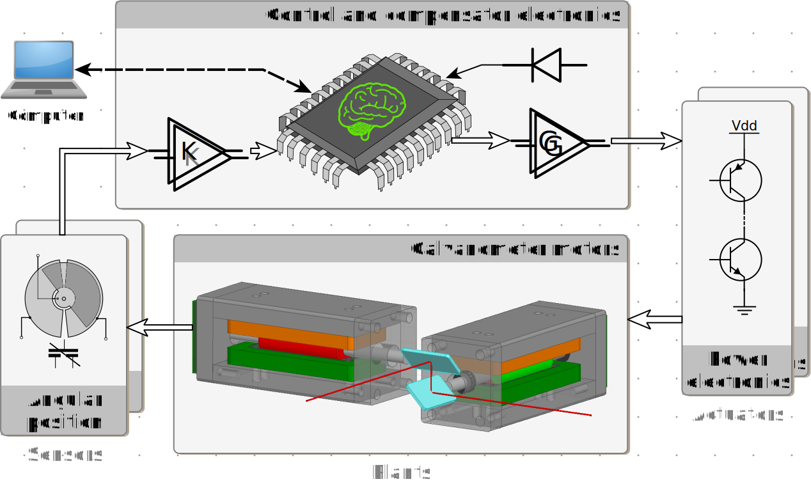
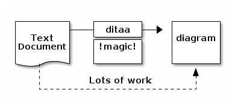

Projekt: XY-Galvo Scanner
- Projekt: XY-Galvo Scanner
- Navigation
- Vorwort
- Einleitung
- Vorarbeit
- Projektziel und Anforderungskatalog
- Terminologie
- Formelzeichen und Einheiten
- Projektplan und V-Modell
- Regelungstechnik
- Diskretisierungsverfahren
- Regelungsnormalform
- Modellbildung
- Modellbildungsprozess
- Regelstrecke
- Stellglied / Leistungsteil
- Signalkonditionierung
- Angaben zur Systemdynamik
- Spezifikationen des Gesamtsystems
- Modellverifikation
- Testsignale
- Problematik der Sättigung
- Modellparameter vergleichbaren
- Step-by-Step
- Regelalgorithmen testen:
- RC-Glied direkt an gepufferten DAC
- Testsignale im uC erzeugen
- Oszibilder mit MATLAB-Simulation vergl.
- Testsignale
- Architekturbeschreibung
- Plattform
- Software und Simulation
- Hardwarenahe Programmierung (C)
- Dokumentation
- PC-Schnittstellenprogramm (C++ / Qt)
- Live-Zustandsüberwachung
- Parameter Manipulation
- Schaltungssimulation und Netzwerkanalyse (LTspice)
- System- und Reglersimulation (Simulink)
- Schnittstelle Spice-to-Simulink (MATLAB)
- Debuggen in sw4stm32
- Quelldaten generieren
- Gesamtsystem
- Hardware
- Resümee
- Quellenangaben
- Notes
- Trash
Navigation
| Tastenkombination | Funktion |
|---|---|
| Alt+Links | Rücksprung zur Ausgangsposition nach Aktivierung eines Hyperlinks Testen ob auch in Windows 7/10: IExplorer, firefox, Chrome |
Vorwort
Diese Ausarbeitung ist in Anlehnung an das Anerkennungsgespräch vom 02.11.2016 entstanden und dient der Einschätzung des Wissensstands.
Gesprächsnotiz:
| Modul | Bezeichnung |
|---|---|
| ELT201 | Softwareentwurf |
| ELT203 | Betriebssysteme |
| ELT204 | Hardwarenahe Programmierung I |
| ELT237 | Hardwarenahe Programmierung II (ab SS17) |
| ELT236 | Embedded Systems |
| ELT247 |
- Doku C-Projekt
- Umsetzung, nicht gesamten Weg
- nicht Architektur
- Doku C++-Projekt bzw. OO
- Allg. wie bei 1.
- “Wozu Unterklasse XY erstellt” etc.
- Doku Embedded-Projekt
- plattformübergreifende Inhalte
- inkl. Modell etc.
V-Modell
An einigen Stellen dieser Dokumentation wird auf Inhalte des V-Modells verwiesen bzw. auf diese Referenziert. Allgemein ist unter der Bezeichnung V-Modell das aktuelle V-Modell XT25 zu verstehen.
Einleitung
Im Rahmen der hier vorgestellten Projektarbeit wurde über einen Zeitraum von ca. 12 Monaten ein System entworfen und aufgebaut, bei dem der Projekt-Schwerpunkt bewusst nicht auf ein einzelnes Teilgebiet des Studiengangs “Nachrichtentechnik – Informationstechnik” beschränkt werden sollte. Die praxisbezogenen Kursinhalte und Laborveranstaltungen des Grundstudiums, vertiefen die erlernten theoretischen Grundlagen und zeigen teilweise auch Methoden zur (Computer-) Modellbildung und/oder Simulation im jeweiligen Teilgebiet auf.
- Analog-/Digitaltechnik
- Felder-Theorie (magnetische / elektrische)
- Wechselstromlehre
- Mikrocontroller-Technik
- Hardwarebeschreibung (VHDL)
- Simulation von elektrischen Netzwerken (SPICE)
- abstrakten Systembeschreibung (Laplace, Fourier)
- Regelungstechnik
- Diskretisierung von Systemen
Einige konkreFür die Umsetzung eines Systemplanung wie auch für die spätere Umsetzung als grundlegend und unerlässlich angesehen wird. Einige öffentliche Vorträge zum Thema “System Konzeption und Beschreibung in der Praxis” wurden am Karlsruher Institut für Technologie (KIT, Universität Karlsruhe) besucht. Dadurch konnten ergänzende Inhalte zum HsKA-Modul “Embedded Systems” erarbeitet und teils auch bei der konkreten Teilsystem-Auslegung umgesetzt werden.
Vorarbeit
Es folgen einige Worte zur Frage “Wie kam es zu dem Projekt?” und “Was wurde letztendlich Umgesetzt?”. Das ursprüngliche Projektvorhaben wurde nur teilweise umgesetzt, soll aber hier der Vollständigkeit halber erwähnt werden.
Ursprüngliche Motivation
Der Besuch einer mehrtägigen Schulungsveranstaltung der Firma ANSYS1 mit Schwerpunkt ANSYS Maxwell2 sowie ANSYS Simplorer3 im Rahmen meiner Formula-Student Mitgliedschaft, weckte das Interesse an einem Projekt im Bereich “Multiphysik und Systemsimulation”. Der nachfolgende Abschnitt “Projektziel” wurde der ursprünglichen Projektanfrage entnommen. Weitere Details sowie erste Simulationsergebnisse (Maxwell FEM-Modell + Simplorer Regelkreis), können in der ursprünglichen Projektanfrage7 eingesehen werden.
Ziel des Projektes ist der Aufbau eines funktionsfähigen XY-Galvanometer-Scanners mit selbstentworfenen Galvanometer-Motoren + Leistungstreiber und eines in C implementierten Software-Reglers (…). Als Galvanometer-Motor-Typ ist ein “Moving magnet motor” geplant. Um die Motorkonstruktion einfach zu halten, ist ein Stator Design mit nur einem Polpaar angedacht.
Unter Zuhilfenahme der FEM-Simulationsumgebung “Maxwell” + “Simplorer”, sollen Reglerparameter anhand eines nichtlinearen Modells des Galvanometer-Motors optimiert werden. Die Sollwert-Vorgaben für die XY-Winkelpositionen werden vorerst als einfache Lookup-Tabellen direkt auf dem Mikrocontroller erzeugt, welcher auch die diskreten Reglerfunktionen übernehmen soll.Sollte das geplante System soweit funktionieren, dass mit dem Scanner einfache geometrische Figuren erzeugt werden können (Kreise, Quadrate, Achter, …), könnte eine PC-Software zur Erzeugung von Pixelkoordinaten inkl. Dunkeltastung des Lasers als Erweiterung angedacht werden.

Statische sowie dynamische Eigenschaften der in ANSYS Maxwell konstruierten Motoren werden auf Basis finiter Elemente modelliert und in einem Multi-Domain-Modell8 abgebildet.
Fertigungsproblematik
Die Motorkonstruktion konnte nie vollständig an einem funktionsfähigen Prototypen getestet werden. Hierzu werden folgende Begründungen genannt:
- Unzureichende dynamische Eigenschaften (Rotormasse, Stabmagnet)
- Kostenintensive / nicht vor Ort durchführbare mechanische Fertigungsschritte
- Bearbeitung des Neodym Materials (Rotormagnet) nicht umsetzbar
- Bearbeitung des aus Ferrit Pulver gepressten Statorkerns schwer umsetzbar
- Verfügbarkeit ungenutzter, professioneller Galvanometer-Motoren
Das “unzureichend” bezieht sich auf das in Abschnitt Error: Reference source not found (Zitat, letzter Abschnitt) formulierte Projektziel. Um die dynamischen Eigenschaften zu verbessern, wäre die mechanische Bearbeitung von Zukaufteilen notwendig gewesen. Nach einigen gemeinsamen Recherchen mit den Werkzeug-Spezialisten des ansässigen Instituts für Materialien und Prozesse (IMP), wurde von einer maschinellen Bearbeitung abgeraten.4
Industriell gefertigte Motoren
Für die weitere Umsetzung des Projekts kamen gebrauchte Spiegel-Galvanometer der Firma “Cambridge Technology Inc.” zum Einsatz. Da keine herstellerspezifischen Informationen über den mechanischen Aufbau der Cambridge Galvanometer zur Verfügung standen, konnte die in Abschnitt Ursprünglich Motivation sowie die in [brun1] beschriebene Multi-Domain-Softwarelösung im weiteren Projektverlauf nicht mehr eingesetzt werden.
Eine zerstörungsfreie Demontage der vorhanden Galvanometer konnte nicht gewährleistet werden. Außerdem ließe der innere mechanische Aufbau keine Rückschlüsse auf die wichtigen Materialeigenschaften des Rotors bzw. Statorkerns zu.
Durch eine sorgfältige Strukturierung des Projektablaufs hätte u. U. Zeit gespart werden können. Die erarbeiteten Kenntnisse im Bereich “Multiphysik und Systemsimulation” sind keines falls umsonst gewesen. Hinsichtlich der produktiven Bearbeitung von Projekten, lässt der bisherige Ablauf jedoch viel Kritik zu. Fertigungsprozesse unterliegen grundsätzlich irgend welchen Einschränkungen. Bereits während der Recherche zum Thema Permanentmagnet, wäre eine Anfrage über die Bearbeitbarkeit notwendig gewesen!
Projektziel und Anforderungskatalog
Stand der Technik
Diskret implementierte Regler sind in vielen Anwendungsbereichen zu finden. Durch leistungsfähigere Mikrocontroller und Signalprozessoren ist es einfacher geworden, quasi-kontinuierliche Systeme zu entwerfen. Aufgrund ihrer Flexibilität und einfachen Erweiterbarkeit, werden digitale Regler zunehmend einer analogen Ausführungen vorgezogen.
Systemzweck
Als übergeordnetes Projektziel soll ein optisches Ablenksystem (2-Achsen → XY-Koordinaten) für eine Laserquelle (Laserpointer, sichtbares Spektrum) auf Basis industriell gefertigter Spiegelgalvanometer geplant, simuliert, entworfen, aufgebaut und verifiziert werden. Die Modellbildung und Simulation des Gesamtsystems soll als Schwerpunktthema betrachtet und entsprechend ausgearbeitet werden.
Systemfunktion im Detail
Die detaillierte Beschreibung der Systemfunktionen wird untergliedert. Der Prototyp-Aufbau wird als physisches System bezeichnet während im Abschnitt Simulationsumgebung das Computermopdell des Gesamtsystems (MATLAB, Simulink, LTspice) näher beschrieben wird.
Physisches System
Die beiden
Um einen Vektor $\vec s$ der Länge $\left| \vec s\right|$ anhand zweier Koordinatenpaare $P_0=(x_0\,|\,y_0)$ und $P_1=(x_1\,|\,y_1)$ an einer bestimmten Stelle zu beschreiben, bietet sich eine alternative Beschreibungsform für Geraden aus dem Teilgebiet der analytischen Geometrie an. In der Parameter- oder Punktrichtungsform wird ein Vektor $\vec s$ entlang einer Geraden $\,g\,$ beschrieben durch:
$$ g:\;\;\;\vec{s}=\vec p + \lambda\cdot\vec v\; $$
Durch die Linearkombination zweier XY-Tupel, dem Ortsvektor (resp. Stützvektor, Aufpunkt) $\;\vec p\;$ und dem Richtungsvektor $\;\vec v\;$, wird die Gerade $\,g\,$ eindeutig bezüglich eines Koordinatenursprungs $\,0\,$ abgebildet. Aufgrund dieser Information lässt sich bereits eine Berechnungsvorschrift für die Implementierung auf dem Mikrocontroller formulieren. Um den Aufwand zur Erzeugung der notwendigen Quelldaten gering zu halten, muss das System in der Lage sein, einfache

Simulationsumgebung
Bereits bei niedrigen Systemordnungen ist es von Vorteil, wenn Reglerparameter mittels Computermodell optimiert werden können. Um quantitative Aussagen bezüglich Stabilität und Robustheit nachweisen zu können, sind entsprechende Simulationen immer dann unerlässlich, wenn es sich um Systeme handelt die durch instabile Betriebszustände beschädigt oder zerstört werden können.
Der grundlegende Modellbildungsprozess eines Gesamtsystems mit zeit-diskreter Regelung, unterscheidet sich nicht signifikant vom Modellbildungsprozess bei kontinuierlicher, sprich analoger Regelung. In der klassischen Regelungstechnik werden die Teilsysteme eines Regelkreises in lineare, zeitinvariante Systeme überführt welche dann als LTI-Blöcke dargestellt werden können.
Infolge dessen ist es gleichgültig, ob einer oder gar mehrere Blöcke in zeit-diskreter Form Formuliert werden - solange alle notwendigen LTI-Bedingungen erfüllt sind.
Aus dem Modellzweck oder Kontext wird die notwendige Modellgranularität abgeleitet. Nach Nyquist ist, im Falle einer zeitdiskreten Regelung, ein Antialiasing Filter in den Signalpfad vor den ADC zu platzieren. Um aus den digital weiterverarbeiteten, gewichteten Impulsfolgen nach der DAC-Wandlung wieder ein analoges (d.h. zeit- und werte-kontinuierliches) Stellsignal zu erzeugen, werden Rekonstruktionsfilter zur Entzerrung des Quantisierungsfehlers eingesetzt. Bei Simulationen bezüglich Systemdynamik oder zur Stabilitätsberechnung dürfen die zusätzlichen Filterpole nicht einfach ignoriert werden. Somit sind z. B. die Teilsysteme “Antialiasing-” und “Rekonstruktionsfilter” in das Computermodell des Gesamtsystems zu integrieren.
Entsprechendes gilt auch für die Modellierung weiterer Teilsysteme wie z. B. Stellglied sowie Messumformer + Tiefpassfilterung.
Design
Systemeinsatz
Systemanforderungen
- Bei den Regelstrecken handelt es sich um Spiegelgalvanometer der Firma Cambridge Technologies (Modell 6860). Diese sind im Sinne der Baugruppen-Wahl als gegeben zu betrachten (vergl. Bestandsbaugruppe).
- Die Positionsregelung der Spiegelachsen soll diskret realisiert und nach erfolgreicher Simulation auf einem Mikrocontroller STM32F429i implementiert werden.
- Die Sollwerte der Aufpunkt-Koordinaten werden als dreiwertige Tupel [X-Pos, Y-Pos, Laser-Blanking] im Speicher des Mikrocontrollers abgelegt und müssen über eine PC-Schnittstelle aktualisiert werden können.
- Die Positionierung des Laserpunktes soll hinreichend “schnell” und “präzise” erfolgen so dass sich zumindest einfache geometrische Figuren auf einen weißen Hintergrund projizieren lassen.
- Das System soll auf ein Computermodell abgebildet werden so dass unterschiedliche Regelalgorithmen evaluiert werden können. Außerdem sollen Hardware-Anpassungen der Signalkonditionierung (primär Antialiasing-/Rekonstruktionsfilter) mit minimalem Aufwand in die Simulation des Gesamtsystems einzupflegen sein.
- Die Prototyp-Hardware soll bereits alle notwendigen Komponenten umfassen, die zur Messung weiterer Zustandsgrößen der Regelstrecke notwendig sind. Somit kann der Aufbau als Grundlage für spätere Tests einer Zustandsraum-Regelung (state space model) genutzt werden.
- Die Anforderung an den Fertigungsprozess der Prototyp-Hardware sollte entsprechend den Möglichkeiten vor Ort (HsKA: PCB-Fräse, manuelle Durchkontaktierung bei doppelseitigen Layouts) angepasst werden.
Allgemeine Anforderungen
Sicherheit
Kann die Positionierung des Laserstrahls jedoch durch entsprechende Schutzmaßnahmen auch bei instabilem Regler-Verhalten und bei Soft- sowie Hardware-Fehlern auf einen festgelegten Bereich beschränkt werden, ist der aktive Personenschutz nicht mehr zwingend erforderlich.
- zu keinem Zeitpunkt die Gefahr ist!
- Description of the “safe state guard” system
- exceptions and forced bias
- Hardware-Komponenten vor Überlast geschützt sind!
Qualität
Um die “Qualität” der erzeugten Abbildungen effektiv messen zu können, soll auf eine Testmöglichkeit für das ILDA-Testpattern implementiert werden.
Zu Beginn des Kapitels Modellbildungsprozess folgt eine erste Aufteilung des Projekts.
Terminologie
Auf häufig wiederkehrende Begriffe wie z. B. Modell, Modellbildung oder System, soll hier kurz eingegangen werden da sie als Überbegriffe sehr universell definiert sein können.
Galvanometer
Ein Galvanometer-Scanner ist ein hochdynamisches elektro-optisches Bauteil, bei dem ein drehbare Spiegel von geringer Trägheit verwendet werden, um einen Laserstrahl mit hoher Genauigkeit und Wiederholbarkeit zu positionieren. Der Name Galvanometer bezieht sich auf den Motor-Typ.20
System
Es gibt sehr abstrakte Definitionen des System-Begriffs. Auch in der soziologischen Systemtheorie werden System-Begriffe formuliert so dass z.B. durch menschliche Handlungen ein abstraktes Modell eines sozialen Systems angeregt bzw. dessen Systemantwort beschrieben werden kann. Eine sehr universelle Definition lautet z. B.:
“System: a set of physical entities that interact and are observable, where the entities can be a specified quantity of matter or a volume in space.” 5
Eine Menge von physikalischen Einheiten die interagieren und beobachtbar sind, wobei sie eine definierte Menge Materie (bzw. eine bestimmte Anzahl an Teilchen) oder ein physischer Körper im Raum sein können.
Systeme und Signale sind die beiden wichtigsten Konzepte der Systemtheorie. In der Praxis werden Gebilde oder Konstrukte als System bezeichnet, die bei Anregung mit einem Eingangssignal x(t) mit einem Ausgangssignal y(t) reagieren.6
Ein Gesamtsystem fügt sich aus Teilsystemen zusammen. Je nach Komplexität der übergeordneten Aufgabe (Wie “dick” sind Pflichten- und Lasten- Heft?) entstehen zahlreiche Abstraktionsebenen die es zu dokumentieren und meist auch zu warten gilt. Hinsichtlich eines Software-Systems wird der Begriff System in der IEEE 1471 wie folgt definiert:
Ein System ist ein aus Teilen zusammengesetztes und strukturiertes Ganzes. Es hat eine Funktion, erfüllt einen Zweck und verfügt über eine Architektur. [MDA:2006, p.57]
Im folgenden beschränkt sich der System-Begriff auf die Systemtheorie als elementare Disziplin der Ingenieurswissenschaften. Der Begriff System ist hier und im Folgenden als Abkürzung für Teilsystem zu verstehen.
Modell
Um ein Modell beschreiben zu können, muss zuvor das System gewählt werden, dessen tatsächliche Eigenschaften über den Prozess der Modellbildung abstrahiert werden soll. Auch für den Begriff Modell finden sich zahlreiche Definitionen in der Literatur. Einige eignen sich sehr gut zur Definition im Sinne technischer Zusammenhänge und Computersimulationen.
Die Grundlagen der Modellierung schuf Herbert Stachowiak 1973 mit der Veröffentlichung der “Allgemeinen Modelltheorie”. Demnach ist ein Modell durch Abbildung, Verkürzung und Pragmatismus gekennzeichnet.16
Abbildung
Ein Modell ist stets ein Modell von etwas – nämlich Abbildung oder Repräsentation eines natürlichen oder eines künstlichen Originals, wobei dieses Original selbst auch wiederum ein Modell sein kann.Verkürzung
Ein Modell erfasst im Allgemeinen nicht alle Attribute des Originals, sondern nur diejenigen, die dem Modellschaffer bzw. Modellnutzer relevant erscheinen.Pragmatismus
Modelle sind ihren Originalen nicht eindeutig zugeordnet. Sie erfüllen ihre Ersetzungsfunktion für
- bestimmte Subjekte (für wen?)
- innerhalb bestimmter Zeitintervalle (wann?)
- unter Einschränkung auf bestimmte gedankliche oder tätliche Operationen (wozu?).
Eine kompaktere Definition wurde einem Lehrbuch “Grund- und Leistungskurs Informatik” von Karl-Hermann Rollke und Klaus Sennholz entnommen:
Ein Modell ist ein durch Abstraktion (Reduzierung und Verallgemeinerung) gewonnenes Abbild eines bestimmten Ausschnitts der Realität. Das Modell wird zu dem Zweck entworfen, den für die Lösung eines bestimmten Problems relevanten Teil der Wirklichkeit für den Menschen oder eine Maschine (Computer) überschaubar und operationalisierbar zu machen.14
Beispiel
Für eine analoge Filterschaltung wird ein mathematisches Modell gefordert. Die Schaltung soll zur Tiefpassfilterung in einer Highend-HiFi Stereoanlage eingesetzt werden. Für den Übergang vom Durchlass- in den Sperrbereich ist eine Dämpfung von 20dB/Dekade vorgegeben. Anhand des Modells soll das Dämpfungsverhalten mittels einiger harmonischer Testsignale untersucht werden können.
Möglichkeit 1
 Man leitet aus den Anforderungen ab, dass ein Standard Filter mit Tiefpasscharakter 1. Ordnung gefordert ist. Da es sich beim Endprodukt um eine Highend-Anlage handelt, sollte ein möglichst präzises Modell formuliert werden. Unter Berücksichtigung aller tatsächlich parasitärer Größen von passiven Bauelementen18 wie Serieninduktivität (ESL) und Serienwiderstände (ESR) der Anschlussdrähte/Anordnung der Elektroden, der Isolationswiderstände und der dielektrischen Absorption (Nachladeeffekt, Rda, Cda), ergibt sich für einen einfachen RC-Tiefpass mit einer Dämpfungsflanke von 20dB/Dekade, das nebenstehende Schaltbild. Da die Ordnung eines Systems direkt aus der Anzahl seiner unabhängigen Energiespeicher abgeleitet werden kann, muss dem geforderten mathematischen Modell eine Differentialgleichung 5. Ordnung!!! zugrunde gelegt werden.
Man leitet aus den Anforderungen ab, dass ein Standard Filter mit Tiefpasscharakter 1. Ordnung gefordert ist. Da es sich beim Endprodukt um eine Highend-Anlage handelt, sollte ein möglichst präzises Modell formuliert werden. Unter Berücksichtigung aller tatsächlich parasitärer Größen von passiven Bauelementen18 wie Serieninduktivität (ESL) und Serienwiderstände (ESR) der Anschlussdrähte/Anordnung der Elektroden, der Isolationswiderstände und der dielektrischen Absorption (Nachladeeffekt, Rda, Cda), ergibt sich für einen einfachen RC-Tiefpass mit einer Dämpfungsflanke von 20dB/Dekade, das nebenstehende Schaltbild. Da die Ordnung eines Systems direkt aus der Anzahl seiner unabhängigen Energiespeicher abgeleitet werden kann, muss dem geforderten mathematischen Modell eine Differentialgleichung 5. Ordnung!!! zugrunde gelegt werden.
Möglichkeit 2
Man leitet aus den Anforderungen ab, dass ein Standard Filter mit Tiefpasscharakter 1. Ordnung gefordert ist. Da es sich beim Endprodukt um ein Audiogerät handelt, können eventuell störende Einflüsse im Frequenzbereiche jenseits von $100\si{kHz}$ als irrelevant betrachtet werden da die auditive Wahrnehmung des menschlichen Gehörs für Frequenzen über $20\si{kHz}$ schlicht nicht mehr sensibel genug ist. Tatsächlich liegt die Musikwahrnehmbarkeit noch deutlich unterhalb der $10\si{kHz}$ Grenze. Für das menschliche Gehör ist es also egal, ob ein TP-Filter im Bereich $900\si{kHz}\dots 1,4\si{MHz}$ eine Resonanzüberhöhung aufweist oder nicht.
Ein formuliertes Modell unterliegt also der Anforderung, möglichst alle relevanten Charakteristika eines Systems abzubilden wobei der Systemgrad minimal gehalten werden soll. So gelingt es, komplexe Zusammenhänge aufzuspalten und eine Problemstellung zu partitionieren.
Modellbildung
Die enormen Anforderungen, die aus Anwendersicht an Hard- und Softwarekomponenten gestellt werden, in Verbindung mit dem Aspekt der Wirtschaftlichkeit, machen sich bereits in der Projektierungsphase eines Auftrags bemerkbar. “Reusability” ist ein Begriff aus der Softwarearchitektur und charakterisiert Software (Quellcode, Dokumentation, Testumgebungen, …) bezüglich ihrer Wiederverwertbarkeit in Folgeprojekten oder Folgeschritten des selben Projektes.13 Um einen Schritt weiter in Richtung modellgetriebene Architektur (engl. Model Driven Architecture, MDA) zu gehen, soll an dieser Stelle ein Unterpunkt aus [MDA:2006, p.17], Kapitel “Akute Probleme bei der Software-Erstellung”, zitiert werden:
Äußere und innere Gleichförmigkeit von Projekten
Zwar impliziert ein Projekt immer einen neuartigen und einmaligen Charakter, oftmals werden aber mehrere Projekte in der gleichen Fach- und/oder Technikdomäne durchgeführt. Genau so oft ähneln oder gleichen sich daher die (architekturellen) Konzepte der realisierten Anwendungen. Diese Gleichförmigkeit wird häufig übersehen oder schlicht ignoriert und anstatt diese domänen-spezifischen Konzepte wiederverwendbar zu machen, wird die gleiche Arbeit unnötigerweise mehrfach verrichtet.
Natürlich ist der Begriff der Wiederverwertbarkeit nicht nur auf Komponenten einer Softwarearchitektur beschränkt. Auch im Hardwarebereich kann ein Unternehmen durch frühzeitig eingeleitete Abstraktionsprozesse, u. U. eine Gleichförmigkeit zu geplanten Folgeprojekten erkennen und das Teilsystem “von Heute” bereits zugunsten eines Teilsystems “von Morgen” optimieren.
Formelzeichen und Einheiten
Aufgrund der hohen Anzahl an Abkürzung, vor allem aber der nicht immer intuitiv ableitbaren mechanischen und mechatronischen Kenngrößen, wurde an dieser Stelle ein eigenes Kapitel als zentrales Nachschlagewerk eingeführt.
Zeitabhängige Größen
| Bezeichnung | Symbol | Einheit | engl. Bezeichnung |
|---|---|---|---|
| Spulenstrom | $i_L$ | $\si A$ | Coil current |
| Elektr. Drehmoment | $M_{EL}$ | $\si{N.m}$ | Electrical torque |
| Reibungsmoment | $M_{FR}$ | $\si{N.m}$ | Rotor dynamic friction torque |
| Torsionsfedermoment | $M_{TB}$ | $\si{N.m}$ | Torsion bar torque |
| Drehimpuls | $L_\omega$ | $\si{N.m.s}$ | Angular momentum |
| Winkelposition | $\varphi_{rad}$ | $\si{rad}$ | Angular position |
| $\varphi_{deg}$ | $\si{°}$ | ||
| Winkelgeschwindigkeit | $\omega$ | $\Si{rad\per s}$ | Angular velocity |
| Stromregler Eingang | $U_{ccI}$ | $\si V$ | Current controller input |
| Stromregler Ausgang | $U_{ccO}$ | $\si V$ | Current controller output |
| Spannung Messshunt | $U_{sh}$ | $\si V$ | Shunt voltage |
Konstanten
Alle Galvanometer-bezogenen Konstanten wurden in der letzten Spalte mit einem A gekennzeichnet und entspringen der Herstellerspezifikation.
| Bezeichnung | Symbol | Einheit | engl. Bezeichnung | |
|---|---|---|---|---|
| Wicklungsinduktivität | $L$ | $\si H$ | Coil inductance | A |
| Wicklungswiderstand | $R_L$ | $\si{\Omega}$ | Coil resistance | A |
| Messwiderstand | $R_{SH}$ | $\si{\Omega}$ | Current shunt resistance | |
| Massenträgheit d. Rotors | $J_R$ | $\si{kg.m^2}$ | Rotor inertia | A |
| EMF-Konstante | $K_{EMF}$ | $\Si{V.s\per rad}$ | Back EMF const. | A |
| Torsionsfederkonstante | $K_{TB}$ | $\Si{N.m\per rad}$ | Torsion bar torque const. | |
| Reibungskonstante | $K_{FR}$ | $\Si{N.m.s\per rad}$ | Friction torque const. | |
| El. Drehmomentkonstante | $K_{EL}$ | $\Si{N.m\per A}$ | El. magnetic torque const. | A |
Projektplan und V-Modell
Bei der industriellen Projektplanung im Bereich Systementwicklungen, stützt man sich, in der Regel, auf das bewährte V-Modell. Spätestens seit Einführung des wesentlich flexibleren V-Modell XT (eXtreme Tailoring, Anfang 2005 26) gibt es kaum noch Gründe, von einer Projektplanung auf Basis des V-Modells abzusehen.
(…)
!Regelungstechnik
!Diskretisierungsverfahren
Regelungsnormalform
Systeme, die über eine lineare Differentialgleichung N-ter Ordnung beschrieben werden, sind linear und zeitinvariant. 24
Eine universelle Methode zur Ableitung grafischer Blockdiagramm aus mathematischen Vorschriften, führt über die Zustandsraumbeschreibung von LTIs. Jedes Zustandsraummodell kann direkt auf einen als Regeleungsnormalform bekannten Signalflussplan abgebildet werden! Die Regelungsnormalform stützt sich dabei auf der Transformierbarkeit von linearen Differentialgleichungssystemen N-ter Ordnung in N lineare Differentialgleichungen 1. Ordnung. Nachfolgende Abbildung zeigt ein Blockdiagramm der Regelungsnormalform für alle LTI DGL-Systeme der Ordnung 3.
Modellbildung
“It’s a bunch of shapes connected by lines.” Dilbert
[MDA:2006, p.73]
Dieser Aussage entsprechend soll hier aus dem formellen Anforderungskatalog (vergl. Pflichtenheft) ein erstes abstraktes Modell abgeleitet werden.
- Regelstrecke
- Sensor
- Leistungselektronik, Aktor
- Steuer- und Reglerelektronik
- Mikrocontrollerplatine
- Signalkonditionierung
- Pegelwandlung
- Antialiasing (ADC)
- Rekonstruktionsfilter (DAC)
- Software, Tools und Simulation
- Zielsystem: Eingebettete Hardware
- Implementierung der Regleralgorithmen (Reglerelektronik)
- Sicherheitssystem (Überstromschutz, “Error-Safe-State”)
- Entwicklungs-PC
- MATLAB/Simlunik, Systemmodellierung/Simulation
- LTspice, Subsystemmodellierung/Simulation
- Eagle CAD, Hardwareentwurf
- Schnittstellenprogramm zur Echtzeitkommunikation
- Zielsystem: Eingebettete Hardware

Generische Modelle
In der Informatik sind generische Typen Datentypen mit der Möglichkeit zur Angabe von Typparametern. Man spricht auch von parametrischer Polymorphie.19 Überträgt man den Begriff generisch auf den hier genutzten Modelltyp, so muss ein Modell formuliert werden, das in der Lage ist, eine ganze Menge von vergleichbaren Strecken (Drehmoment-Motoren) zu beschreiben. Übergibt man dem generischen Typ “Drehmoment-Motoren” respektive “Galvanometer” die für den zu erzeugenden Modelltyp spezifischen Parameter wie Drehmomentkonstante, Wicklungsinduktivität oder das Massenträgheitsmoment der Rotorwelle, soll eine entsprechend typisierte Modellvariante erzeugt werden. Dieses Modell wird als Subsystem Drehmoment-Motoren auf einer höheren Abstraktionsebene in ein weiteres Modell eingebunden und anschließend simuliert.
Die Analogie zu generic types in objektorientierten Programmiersprachen ist nur teilweise zulässig. Vergleicht man diese Methode jedoch mit der in Vorarbeit aufgezeigten, nämlich einem Motor-Computermodell, abhängig von Geometrie und Materialparametern, so finden sich doch einige Eigenschaften, die analog verwendet werden können.
Mathematische Zusammenhänge
Die Grundlage eines generischen Modells ist seine Mathematik. Die Gesetze der Physik müssen bei der mathematischen Modellierung eingehalten werden. Der Verlauf der Geschwindigkeit $v(t)$ eines Körpers lässt sich bekanntlich durch Differentiation seiner Streckenfunktion $s(t)$ oder durch Integration seiner Beschleunigung $a(t)$ über der Zeit formulieren. Diese Gesetzmäßigkeiten gelten gleichermaßen für translatorische sowie rotatorische Bewegung. Daraus folgt unter anderem, dass die Integralbildung der Winkelgeschwindigkeit $\omega(t)$ eines rotierenden Körpers, unmittelbar auf seine Winkelposition $\varphi(t)$ führt. Diese grundlegenden Gesetze müssen später anhand des Modells verifiziert werden können.
Translation und Rotation
Die Grundgleichungen für Translation und Rotation sollen einerseits zur einheitlichen Notation im Rahmen dieser Arbeit beitragen, zum anderen dient die Tabelle (vergl. [Iser:2008, 123]) der Überprüfung von physikalischen Einheiten .
| Translation | in eine Richtung | Rotation | um eine Achse |
|---|---|---|---|
| $s$ | Weg | $\varphi$ | Winkel |
| $v=\dot s$ | Geschwindigkeit | $\omega = \dot\varphi$ | Winkelgeschwindigkeit |
| $a=\dot v = \ddot s$ | Beschleunigung | $\dot\omega = \ddot\varphi$ | Winkelbeschleunigung |
| $m$ | Masse | $J, \theta$ | Trägheitsmoment |
| $\vec F$ | Kraft in Wegrichtung | $\vec M$ | Moment um Drehachse |
| $\vec I = m \cdot \vec v$ | Impuls | $\vec L = J \cdot \vec\omega$ | Drehimpuls |
| $\vec F = m \cdot \vec a$ | Kraeftesatz | $\vec M = J \cdot \dot\omega$ | Momentensatz |
| $E_k = \frac 1 2\; m \cdot v^2$ | kinetische Energie | $E_k = \frac 1 2\; J \cdot \omega^2$ | kinetische Energie |
| $W = \int F ds$ | Arbeit | $W = \int M d\varphi$ | Arbeit |
| $P = F \cdot v$ | Leistung | $P = M \cdot \omega$ | Leistung |
Das Aufstellen von Bilanzgleichungen ist ein essenzieller Bestandteil bei der Modellbildung von technischen System und Prozessen. Zum Beispiel gilt für jedes energetisch abgeschlossene System (Bsp.: idealer Feder-Masse-Schwingkreis, idealer LC-Schwingkreis) stets, dass die Momentanenergie zu jedem Zeitpunkt $t \ge 0$ identisch mit der Energie zum Zeitpunkt $t=0$ übereinstimmt.
Energiebilanz in allgemeiner Form
Verläuft über die Grenzen eines geschlossenen Gebildes (System, Prozess, …) kein Energiestrom, so unterliegt das Gebilde dem Energieerhaltungssatz wobei innerhalb der Grenenzen $N$ verschiedene Energiearten $E_i$ vorhanden sein können (siehe Abbildung links). Es ist z.B. unproblematisch, Analogie-Beziehungen zwischen translatorischer und rotatorischer Bewegung anhand des Energieerhaltungssatzes nachzuweisen. Die theoretische Umformung der mechanischen Größen $m, \vec{v}, \vec{J}$ und $\vec{\omega}$ entspricht hier dem Gebilde im Sinne eines energetisch abgeschlossenen Prozesses.
$$ \frac{1}{2} \cdot m \cdot v^2 = E_{kin}
\;\;\;\widehat{=}\;\;\;
E_{rot} = \frac{1}{2} \cdot J_x \cdot \omega^2 $$
Aus dem Energieerhaltungssatz kann das Kräftegleichgewicht abgeleitet werden. Wegen den analogen Gesetzmäßigkeiten zwischen translatorischer und rotatorischer Bewegung, kann vom Kräftegleichgewicht eines bewegten Körpers auf ein Drehmomentgleichgewicht geschlossen werden.
Impulsbilanzgleichung
Wirkt auf einen Körper der Masse $m$ und dem Impuls $\vec I = m \cdot \vec v$ eine äußere Kraft $\vec F$, so gilt bei translatorischer Bewegung und $m=const$ entsprechend dem Impulserhaltungssatz23 folgende Bilanzgleichung:
\begin{equation}
\frac{\partial}{\partial\,t}\,\vec I = m \cdot \frac{\partial}{\partial\,t}\,\vec v(t) = \vec F(t) \label{eqImpulsbil}\end{equation}
Die Beziehung in \eqref{eqImpulsbil} wird als Impulsbilanzgleichung bezeichnet. Analog wird die Impulsbilanz für rotiernde Körper mit der als skalar betrachteten Massenträgheit $J$ und bestehendem Drehimpuls $\vec L_s = J \cdot \vec \omega$ aufgestellt. Gleichung \eqref{eqDrehimpulsbil} wird folgerichtig als Drehimpulsbilanzgleichung bezeichnet.
\begin{equation}{\frac{\partial}{\partial\,t}\,\vec L_s = J \cdot \frac{\partial}{\partial\,t}\,\vec \omega(t) = \vec M(t)} \label{eqDrehimpulsbil}\end{equation}
Modellbildungsprozess
Regelstrecke
Wie bereits in Abschnitt Industriell gefertigte Motoren erwähnt, wurden Galvoscanner als elektromechanische Signalwandler eingesetzt. Um die physikalischen Zusammenhänge eines Drehmoment-Motors nach dem Galvanometer-Prinzip in ein Computermodell überführen zu können, gibt es mehrere Ansätze. Die Möglichkeit, ein Multiphysik-Modell zu erstellen und einzusetzen, wurde im Abschnitt Vorarbeit angesprochen. Ein anderer, hier genutzter Ansatz, wird im Abschnitt generisches Modell beschrieben.
Klassifizierung
Galvanometer-Motoren lassen sich nicht so ohne weiteres in eine Unterklasse der Elektromotoren einordnen. Als Messinstrument in Drehspulmesswerken erzeugt das Galvanometer eine mechanische Drehbewegung proportional zum gemessenen Strom. DC-Motoren hingegen sind elektromechanische Baugruppen die eine elektrische Gleichleistung in eine mechanische Leistung umsetzen können. Im dynamischen Betrieb verhält sich ein Spiegelgalvanometer ähnlich einem DC-Motor. Das Momentanmoment, multipliziert mit der Drehzahl ergibt eine mechanische Leistung in $\si{N.m/s}$. Im Galvanometer Betrieb (Messinstrument) gleicht der Galvomotor einem elektrischen Drehmagneten welcher ein mechanisches Drehmoment erzeugt.
Bei der Modellierung von DC-Motoren wird der Zusammenhang zwischen Motorstrom und Drehmoment oft soweit linearisiert, dass zur Beschreibung ein konstanter Faktor, die Drehmomentkonstante, ausreichend ist. Zulässig wird diese Annäherung, wenn man die magnetische Flussdichte des Erreger-Magnetfeldes als konstant betrachten kann (siehe Abbildung). Da das elektromechanische Wirkprinzip der hier verwendeten “Moving-magnet” Galvanometer auf einem permanent erregten Magnetfeld basiert, ist die Annahme B=const_ gerechtfertigt. Wenn die Intensität des Erregerfeldes für beide Betriebsarten (Motor, Drehmagnet) gleich und als konstant angenommen wird, entsteht durch die variable Position des Rotormagnetfelds gegenüber dem des Statorfeldes ein Fehler. Tabelle Mechanical Specifications kann eine maximale Auslenkung der Rotorwelle von $\pm 20\si{°}$ entnommen werden. Das Momentanmoment ändert sich in diesem Bereich entsprechend dem Kosinus des Rotorwinkels was im schlimmsten Fall zu einem Fehlerfaktor von $cos(20° \pi/180°) \approx 0.94$ führt. Obwohl es sich bei Galvanometer-Motoren also nicht um DC-Motoren im klassischen Sinn handelt, kann eine Drehmomentkonstante zur approximation angegeben werden. Wie in Abschnitt Industriell gefertigte Motoren erwähnt, muss das Modell anhand von Herstellerspezifikationen konkretisiert werden können. In Tabelle Mechanical Specifications ist die entsprechende Drehmomentkonstante unter Torque Constant angegeben.
Da das elektromechanische Wirkprinzip der hier verwendeten “Moving-magnet” Galvanometer auf einem permanent erregten Magnetfeld basiert, ist die Annahme B=const_ gerechtfertigt. Wenn die Intensität des Erregerfeldes für beide Betriebsarten (Motor, Drehmagnet) gleich und als konstant angenommen wird, entsteht durch die variable Position des Rotormagnetfelds gegenüber dem des Statorfeldes ein Fehler. Tabelle Mechanical Specifications kann eine maximale Auslenkung der Rotorwelle von $\pm 20\si{°}$ entnommen werden. Das Momentanmoment ändert sich in diesem Bereich entsprechend dem Kosinus des Rotorwinkels was im schlimmsten Fall zu einem Fehlerfaktor von $cos(20° \pi/180°) \approx 0.94$ führt. Obwohl es sich bei Galvanometer-Motoren also nicht um DC-Motoren im klassischen Sinn handelt, kann eine Drehmomentkonstante zur approximation angegeben werden. Wie in Abschnitt Industriell gefertigte Motoren erwähnt, muss das Modell anhand von Herstellerspezifikationen konkretisiert werden können. In Tabelle Mechanical Specifications ist die entsprechende Drehmomentkonstante unter Torque Constant angegeben.
Der Vollständigkeit halber sollen an dieser Stelle einige Parallelen zur Unterklasse der elektronisch kommutierten Elektromotoren gezogen werden. Das Rotormaterial der unter dem Begriff “Brushless DC-Motor” bekannten Antriebe besteht i.d.R. ebenfalls aus permanent magnetisierten Werkstoffen. Durch eine elektronische Ansteuerung wird über mehrere Statorwicklungen ein Drehfeld erzeugt.
Herstellerspezifikation
Bei den hier eingesetzten, industriell gefertigten Motoren der Firma Cambridge Technology handelt es sich um optische Scannereinheiten (Serie 6860) vom Typ “Moving Magnet” mit integriertem Positionssensor, welcher auf Basis variabler Kapazitäten arbeitet. Die vom Hersteller liebevoll unter Veteran Galvo Motors kategorisierten Motoren gehören zwar nicht mehr zu den aktuellen Produkten von Cambridge Technology, sind jedoch hervorragend geeignet für das hier dokumentierte Projektvorhaben.
Nachfolgend werden die Herstellerspezifikationen der 6860 Serie aufgelistet.
| Electrical Specifications | Symbol | Value | ||
|---|---|---|---|---|
| Coil Inductance | $L$ | $\SI{160}{\micro\henry}$ | $\pm\SI{10}{\%}$ | |
| Coil Resistance | $R_L$ | $\SI{1.5}{\ohm}$ | $\pm\SI{10}{\%}$ | |
| Back-EMF const. | $K_{EMF}$ | $\SI{0.17}{mV s /\degree}$ | $\SI{9.74}{mV s /\radian}$ | $\pm\SI{10}{\%}$ |
| RMS Current | $I_{L-RMS}$ | $\SI{4.6}{A}$ | at $\ T_{case}=\SI{50}{°C}$ | Max. |
| Peak Current | $I_{L-PEAK}$ | $\SI{25}{A}$ | Max. | |
| Step Response Time | Small Angle | $\SI{0.5}{ms}$ | inertia matched load |
| Mechanical Specifications | Symbol | Value | ||
|---|---|---|---|---|
| Angular Excursion | $\Delta\varphi_{Max}$ | $\SI{40}{\degree}$ | $\SI{0.698}{\radian/s}$ | |
| Rotor Inertia | $J_R$ | $\SI{0.6}{gm.cm^2}$ | $\SI{6e-8}{kg.m^2}$ | $\pm\SI{10}{\%}$ |
| Torque Constant | $K_{EL}$ | $\SI{9.3*10^4}{dyne.cm/A}$ | $\SI{9.3e-3}{N.m/A}$ | $\pm\SI{10}{\%}$ |
| Max. Coil Temperature | $\SI{110}{°C}$ | |||
| Thermal Resistance (Coil - Case) |
$\SI{1.5}{°C/\watt}, Max$ |
| Position Detector | Value | |
|---|---|---|
| Linearity | 99.9%, Minimum, over 40 degrees | |
| Scale Drift | 50PPM/°C, Maximum | |
| Zero Drift | 15 microradians/°C, Maximum | |
| Repeatability, Short Term | 8 microradians | |
| Output Signal, Common Mode | 585µA @ AGC voltage=10VDC | $\pm\SI{20}{\%}$ |
| Output Signal, Differential Mode | 14.5µA/° @ common mode current of 585µA | $\pm\SI{20}{\%}$ |
$\;\;\;1\;dyne.cm \;\;\;\Leftrightarrow\;\;\; 1\times 10^{-7} Nm$
$\;\;\;1\;gm.cm^2 \;\;\;\Leftrightarrow\;\;\; 1\times 10^{-7} kg.m^2$
Elektrische Komponenten
Das fertige Modell des Galvomotors setzt sich aus elektrischen und mechanischen Teilsystemen zusammen. Beim ersten Modellansatz wurde die Eingangsspannung der Statorinduktivität als Stellgröße für die Regelstrecke angenommen.
Elektrisches Teilsystem
In differentieller Form ist die Zweipolbeziehung einer idealen Induktivität gegeben durch:
$$ u(t)=L \cdot \frac{\partial~i_L}{\partial~t} $$
Bezeichnet $u_M(t)$ die Eingangsspannung der Statorwicklung und $R_L$ den reellen Wicklungswiderstand, so gilt für eine reale Motorinduktivität
$$ u_M(t)=L \cdot \frac{\partial~i_L}{\partial~t} + R_L \cdot i_L(t)
\;\;\;\Leftrightarrow\;\;\;
\frac{u_M(t)}{L} = \frac{\partial~i_L}{\partial~t} + \frac{R_L}{L} \cdot i_L(t) $$
Wird diese Differentialgleichung Laplace-transformiert, ergibt sich im Bildbereich die Funktionsgleichung:
$$\mathscr{L}\Bigg(\frac{u_M(t)}{L}\Bigg) = \frac{U_M(s)}{L} = s \cdot I_L(s) - i_{L0} + \frac{R_L}{L} \cdot I_L(s)$$
Bei verschwindenden Anfangsbedingungen $i_{L0}=0$ gilt für die Übertragungsfunktion (transfer function, TF) zwischen Motorspannung und Motorstrom:
$$ \begin{equation}
G_{EL^*}(s) = \frac{I_L(s)}{U_M(s)} = \frac{1}{L} \cdot \frac{1}{s+\frac{R_L}{L}} \label{eqGsAusg} \end{equation} $$
Die Zeitkonstante des ersten Energiespeichers im System kann durch Umformung des Nennerpolynoms von \eqref{eqGsAusg} bestimmt werden und beträgt $\; {\large\tau} = \frac{L}{R_L} = \frac{160\,\mu H}{1.5\,\Omega}\approx 107\,\mu s$.
Mit dem Ziel, das System als Blockschaltbild darzustellen, wird die Übertragungsfunktion nach der Regel für PT1-Glieder umgeformt. Es gilt darauf zu achten dass bei der Umformung keine freien $s$-Faktoren entstehen da Systeme mit Nullstellenüberschuss keine Bandbegrenzung besitzen. Ein ideales Differenzierglied mit $G(s)=s$ ist aus Kausalitätsgründen technisch nicht realisierbar. \begin{equation} \mathrm{Übertragungsfunktion = \frac{Vorwärtspfad}{1 + Vorwärtspfad \times Rückwärtspfad}} \label{eqForwardPath} \\ \phantom{.} \\ G_{EL}(s) = \frac{I_L(s)}{U_M(s)} \cdot \frac{1/s}{1/s} = \frac{1}{s} \frac{1}{L} \cdot \frac{1}{1 + \frac{1}{s} \frac{R_L}{L}} \end{equation}
Back-EMF
Die Änderung der magnetischen Flussdichte innerhalb einer Leiterschleife erzeugt nach Faraday und Maxwell ein elektrisches Feld zwischen den Leiteranschlüssen. Die elektromagnetische Induktion führt bei Elektromotoren zu einer elektrischen Spannung, die der Quellenspannung des Motorantriebs entgegen wirkt. Aus diesem Grund wird diese elektromotorische Kraft (EMK, engl. “Electromotive Force”, EMF) auch als Back-EMF oder Counter-EMF bezeichnet. Die Intensität der Back-EMF steigt proportional mit der Geschwindigkeit der bewegten Leiterschleife bzw. des bewegten Magnetfeldes, was im Modell durch die Produktbildung von Winkelgeschwindigkeit und einem konstanten Faktor $K_{EMF}$ berücksichtigt werden muss. Wenn die mechanischen Reibungsverluste eines elektrischen Antriebs zu 0 gesetzt werden, sind Drehmomentkonstante $K_{EL}$ und $K_{EMF}$ identisch
In den Herstellerspezifikationen (Electrical Specifications) ist der EMF-Faktor mit $0.17\si{mV/degree/sec}\;\;±10\%$ angegeben. In si-Einheiten umgerechnet ergibt sich daraus
$$\begin{aligned}
\SI{0.17}{\milli V\per\degree\per\second} \\
0.17,mV/degree/sec &= 9.74\times 10^{-3} V/rad/s \nonumber \\
&= 9.74\times 10^{-3} Nm/A \nonumber
\end{aligned}$$
was, bis auf die Reibungsverluste, ziemlich genau der Drehmomentkonstante entspricht. Für die elektromotorische Kraft des bewegten Magnetfeldes gilt somit
\begin{equation} u_{EMF}(t) = K_{EMF} \cdot \omega(t) \label{eqVemf} \end{equation}
Die Spannung $u_{EMF}(t)$ wird mit negativem Vorzeichen in den Signalpfad vor $G_{EL^*}(s)$ Rückgekoppelt um ihren Einfluss auf die Dynamik der Regelstrecke korregt zu modellieren.
\begin{equation}
G_{EL}(s) = \frac{I_L(s)}{U_M(s)-U_{EMF}(s)} = \frac{1}{L} \frac{1}{s} \cdot \frac{1}{1 + \frac{1}{s} \frac{R_L}{L}} \label{eqGel} \end{equation}
Elektrisch generiertes Drehmoment
Das elektrische Drehmoment $M_{EL}$ zum Zeitpunkt $t=t0$ entspricht dem Produkt aus Spulenstrom $i_L(t0)$ und Drehmomentkonstante $K_{EL}$, somit gilt $M_{EL}(t) = i_L(t) \cdot K_{EL}$ was einfach durch einen weiteren Gain-Block im Blockschaltbild berücksichtigt wird.
Positionssensor
Die verwendeten Galvoscanner sind mit einem integrierten Positionsdetektor ausgestattet. Die Winkelposition der Rotorwelle wird anhand variabler Kapazitäten gemessen (siehe Abb. in Modellbildungsprozess). Die Größenordnung der Kapazitätsdifferenz liegt bei nur wenigen Picofarad. Um auch kleine Positionsänderungen präzise messen zu können, sind entsprechend hohe Anforderungen an die Mess- und Auswerteelektronik zu stellen. Die vom Hersteller bereitgestellte Winkelposition ist einer Trägerschwingung von $f_0 = 1.6~MHz$ aufmodulliert und steht als Differenzstromsignal zur Verfügung. Mit einer entsprechend präzise ausgelegten Operationsverstärkerschaltung wurde das Differenzstromsignal zu einer proportionalen Gleichtaktspannung demoduliert. Der Proportionalitätsfaktor wird im Folgenden als $K_{PD}$ bezeichnet und besitzt die Einheit $V/rad$.
Um den eingebauten Positionssensor der 6860 Galvoscanner zu modellieren, wird die Winkelgeschwindigkeit $\omega(t)$ durch einen einfachen Integrationsblock in die Winkelposition $\varphi(t)$ überführt (siehe Mathematische Zusammenhänge).
Mechanische Komponenten
Eine bewegte Masse speichert die kinetische Energie $E_{kin}$. Neben dem Linearfaktor m steigt $E_{kin}$ dabei quadratisch zur Geschwindigkeit, mit der sich die Masse bewegt. Rotiert ein Körper um eine feste Achse, so spricht man von Rotationsenergie $E_{rot}$. Sie steigt in Abhängigkeit des Trägheitsmoments21 $J_R$ des Körpers und dem Quadrat seiner Winkelgeschwindigkeit $\omega(t)$.
Das mechanische Teilsystem kann also ebenfalls durch ein entsprechend dimensioniertes PT1-Glied beschrieben werden (Ein einzelner, linear unabhängiger Energiespeicher). Um den systemtheoretischen Zusammenhang der einzelnen mechanischen Größen mathematisch abbilden zu können, wurde folgende Liste erstellt. Sie beinhaltet zusätzlich Näherungen und Annahmen die bisher getroffen wurden
- elektrisches Drehmoment $\,\bf{M_{EL}}$
- Erregerfeld gilt als konstant bezüglich Intensität ($\vec{B}, \vec{H}$) und Winkelpos. (siehe Klassifizierung, 2. Absatz)
- $M_{EL}$ ist im Bereich $\,\pm \frac{1}{2}\cdot \Delta\varphi_{Max} = \pm 20°$ proportional zum Spulenstrom $\,i_L(t)$
- Herstellerangaben zum Proportionalitätsfaktor $\,K_{EL}$ vorhanden
- Trägheitsmoment $\,\bf{J_R}$ (alt. Inertialmoment) des rotierenden Körpers setzt sich zusammen aus
- Rotorwelle, Rotormagnet, Sensorscheibe und Spiegel
- Die Drehachse wird als fest und die Rotormasse als homogen verteilt, angenommen
- Trägheitstensor darf in die skalare Größe des Trägheitsmoments überführt werden
- Herstellerangabe zum skalaren Trägheitsmoment $\,J_R$ vorhanden
- mechanische Reibung $\,\bf{M_{FR}}$, verursacht durch Reibungsverluste in
- Kugellager, Positionssensor, keine Herstellerangaben
- äußeres Lastmoment / Rückstellmoment $\,\bf{M_{TB}}$
- siehe Lastmoment
- keine Herstellerangaben
Lastmoment
Für den konkreten mechanischen Aufbau des Scannermodells 6860 konnten keine zuverlässigen Quellen gefunden werden. Die Vermutung, dass die Rotorwelle einem statischen Lastmoment ausgesetzt ist, soll im folgenden kurz begründet werden:
- selbständiges Rückstellen der Rotorwelle bis auf ±4° um die Mittelstellung wenn Spannungsfrei geschaltet
- Die Rotorwelle wird automatisch in Mittelstellung zurück gedreht wenn das elektrische Moment zu 0 wird.
- Dieser Effekt könnte, abhängig von Aufbau und Geometrie des magnetischen Statorkreises, auch darauf zurück zu führen sein, dass sich bei Mittelstellung der geringste magnetische Widerstand einstellt. Anders formuliert: Die Rückstellbewegung könnte auch auf die Reluktanzkraft zurückzuführen sein.
- Kräftegleichgewicht bei sehr geringen Statorströmen (wenige mA)
- Wird ein minimaler Gleichstrom in die Motorwicklung eingeprägt, so stellt sich im Bereich $\,\Delta\varphi_{Max}$ ein Gleichgewichtszustand des Drehwinkels ein.
- Quelle: Mechanisches Funktionsprinzip von Effektlasern auf www.laserfx.com
- Elektrische “Erdung” des Rotorkörpers um elektrostatischen Effekten vorzubeugen
In der Produktspezifikation des Herstellers sind keinerlei Angaben bezüglich statischer Lastmomente zu finden. Da diese jedoch experimentell nachweisbar sind und sich der Einfluss nur schwer abschätzen lässt, wurde bei der Modellbildung ein entsprechendes Lastmoment in Form einer Torsionsfederkonstante (lineares Verhalten) mit einbezogen.
Mechanisches Teilsystem
Entsprechend des Abschnitts Mathematische Zusammenhänge dient die Drehimpulsbilanzgleichung \eqref{eqDrehimpulsbil} als Ausgangspunkt für die konkrete Formulierung des mechanischen Teilsystems. Um das dynamische Verhalten der Galvanometer-Motoren weitestgehend korrekt abzubilden, müssen die zeitabhängigen Drehmomente $M_{EL},\,M_{FR},\,M_{TB}$ und das Massenträgheitsmoment $J_R$, bei der Bilanzbildung mit entsprechendem Vorzeichen berücksichtigt werden.
\begin{equation}
J_R\,\frac{\partial}{\partial\,t} \, \omega(t) = M_{EL}(t) - \big[M_{FR}(t) + M_{TB}(t) \big] \label{eqDrehimpulsbilBase}\end{equation}
Das mechanische Reibmoment $\vec M_{FR}(t)$ und das Lastmoment $\vec M_{TB}(t)$ der Torsionsfeder wirken dem elektrisch generierten Drehmoment $\vec M_{EL}(t)$ entgegen.
\begin{equation}
J_R \; \dot\omega = M_{EL} - M_{Mech} \label{eqDrehimpulsbilKon} \end{equation} Werden die i.A. gerichteten Größen auf skalare reduziert, ergeben sich folgende, einfache Beziehungen
\begin{equation}
M_{TB} \;\propto\; \varphi \;\;\;\Leftrightarrow\;\;\; M_{TB} = K_{TB}\cdot\boldsymbol{\varphi} \label{eqLinearTorsin}
\end{equation} Das Torsionsmoment (statisches Lastmoment) steigt an, je weiter der Rotor aus seiner Ruhelage heraus bewegt wird. Die Gleit-Reibung ist hingegen nur von der Geschwindigkeitsdifferenz zweier Körper abhängig, geht man von einem konstanten Gleitreibungskoeffizienten im Bereich $\pm 1/2\cdot\Delta\varphi_{Max}$ aus. Bei entsprechend “schwer” anlaufenden Antrieben sollte die Haftreibung (oft durch verzögerte Signum-Funktion modelliert) nicht außer Acht gelassen werden. Glücklicherweise kann hier auf diese Klasse hochgradig nicht-linearer Übertragungsfunktionen verzichtet werden. Für die Gleitreibung gillt jedoch:
$$ \begin{align}
M_{FR} \;\propto\; \omega &\;\;\;\Leftrightarrow\;\;\; M_{FR} = K_{FR} \cdot\boldsymbol{\dot\varphi} \label{eqLinearFriction} \\
M_{EL} \;\propto\; i_L &\;\;\;\Leftrightarrow\;\;\; M_{EL} = K_{EL}\cdot i_L \label{eqLinearElTorque}
\end{align} $$ Der lineare Zusammenhang zwischen Ankerstrom und Drehmoment wurde bereits erwähnt. Nach einsetzen von \eqref{eqLinearTorsin}, \eqref{eqLinearFriction} und \eqref{eqLinearElTorque} in die Drehimpulsbilanzgleichung aus \eqref{eqDrehimpulsbilKon} erhät man dann eine lineare DGL 2. Ordnung mit konstanten Koeffizienten:
\begin{equation}
J_R~\ddot\varphi + K_{FR}~\dot\varphi + K_{TB}~\varphi = K_{EL}\cdot i_L(t) \label{eqDglSecond} \\ \phantom{.} \\
\small{\left[kg\,s^2\right]\left[\frac{rad}{s^2}\right] + \left[\frac{Nm\,s}{rad}\right]\left[\frac{rad}{s}\right] + \left[\frac{Nm}{rad}\right]\left[rad\right] = \left[\frac{Nm}{A}\right]\left[A\right]} \\ \phantom{.} \end{equation}
Es gibt nun mehrere Ansätze wie die DGL in den Bildbereich transformiert werden kann. Mit Gleichung \eqref{eqDglSecond} als Ausgangspunkt, wäre eine direkte Transformation problemlos umsetzbar. Durch Anwendung des Differentiationstzes der Laplace-Theorie, lässt sich die Bildfunktion schnell aufstellen. Der 1. Ansatz lautet deshalb:
\begin{equation}
\mathscr{ L }\bigg\lbrace\frac{\mathrm{d}^n x}{\mathrm{d} t^n}\bigg\rbrace = s^n \cdot X\left(s\right)-s^{n-1} \cdot x(0_{\small-})- \,\dots\left.\frac{\mathrm{d}^{n-1}x}{\mathrm{d}t^{n-1}} \right\bracevert_{t=0_{\small-}} \;\;\;\;\;\;\;\;\;{\small{und\ mit}\;\;} \mathscr{L}\lbrace\varphi(t)\rbrace = {\large\Phi}(s) \nonumber
\\ \phantom{.} \\ \Downarrow \\ \phantom{.} \\
\frac{K_{EL}}{J_R} \cdot\mathscr{ L }\,\Big\lbrace\ i_L(t) {\Big\rbrace} = s^2 \,{\large\Phi}(s) - s\,\varphi(0)-\dot\varphi(0) + \frac{K_{FR}}{J_R}\cdot s \,{\large\Phi}(s) - \frac{K_{FR}}{J_R}\, \varphi(0) + \frac{K_{EL}}{J_R} \cdot {\large\Phi}(s) \nonumber
\end{equation}
Setzt man die Anfangsbedingungen in beiden Ableitungen wieder zu null, entseht zwar ein übersichtlicher Ausdruck, jedoch lässt sich von diesem nicht so ohne weiters auf die Struktur der Blockschaltung schließen.
Andere wichtige Systemeigenschaften wie z.B. die stationäre Verstärkung oder die Zeitkonstanten des Streckenteils $\Phi{\small(s)/}I_L{\small(s)}$, können der Übertragungsfunktion ${\mathrm G_{{\small \mathrm M_1}}}$ jedoch entnommen werden.
\begin{equation}
\frac{K_{EL}}{J_R} \cdot I_L(s) = s^2 \,{\large\Phi}(s) + \frac{K_{FR}}{J_R}\cdot s \,{\large\Phi}(s) + \frac{K_{EL}}{J_R} \cdot {\large\Phi}(s) \nonumber \\ \phantom{.} \\ \Updownarrow \\ \phantom{.} \\
{\mathrm G_{{\small \mathrm M_1}}}(s)=\frac{{\large\Phi}(s)}{I_L(s)} = \frac{K_{EL}}{J_R} \cdot \frac{1}{s^2+s\cdot\frac{K_{FR}}{J_R}+ \frac{K_{TB}}{J_R}} \label{equDglWI}
\end{equation}
Mit dem Übergang in den Bildbereich wurden die physikalischen Zusammenhänge beim ersten Ansatz untransparent. Aufgrund der Forderung nach einer , die Laplace Transformation auf eine DGL 1. Ordnung anwenden zu können, muss einer der kinetischen Energiespeicher aus \eqref{eqLinearFriction} “wegfallen”. Wieder ausgehend von der Drehimpulsbilanzgleichung \eqref{eqDrehimpulsbilBase}, wird dieses mal nach dem “nächsten Verwandten” von $J_R\cdot\omega$ innerhalb der Inhomogenität der DGL gesucht:
Werden in der Ausgangsgleichung nur Terme eingesetzt, die höchstens eine Integration über $\boldsymbol{\dot\omega}$ liegen, bleibt auch die Ordnung der resultierenden DGL erhalten. In \eqref{eqDrehimpulsbilBase} wird also nur das Reibmoment $M_{FR}$ durch $K_{FR} \cdot{\dot\varphi}=K_{FR} \cdot{\omega}\,$ und das elektrische Moment $M_{EL}$ entsprechend substituiert. Anschließend folgt wieder die Laplace-Transformation wobei $\Omega(s)$ als $\mathscr{ L } \big\lbrace\,\omega(t)\big\rbrace$ zu verstehen ist.
\begin{align}
J_R\,\frac{\partial}{\partial\,t} \, \omega(t) &= \boldsymbol{K_{EL}\cdot i_L(t)} - \boldsymbol{K_{FR} \cdot \omega (t)} - M_{TB}(t) \;\;&&\Leftrightarrow \nonumber \\
J_R\,\dot\omega + K_{FR} \cdot \omega &= K_{EL}\cdot i_L - M_{TB} &&\Big|\;\mathscr{ L } \lbrace\,\dots\rbrace \nonumber \\
\Omega(s)\cdot \big(s\cdot J_R+K_{FR}\big) &= K_{EL}\cdot I_L(s) - M_{TB}(s) &&wenn\ \omega(0)=0 \label{eqBeforeLapMech}
\end{align}
Um an die Übertragungsfunktion des elektrischen Teilsystems $G_{EL}(s)$ aus \eqref{eqGel} anknüpfen zu können, muss Gleichung \eqref{eqBeforeLapMech} in eine Form gebracht werden, in der $I_L(s)$ im Nenner auftaucht:
\begin{align}
\frac{ \Omega(s) }{K_{EL}\cdot I_L(s) - M_{TB}(s)} &= \frac 1 {s\cdot J_R+K_{FR}} \nonumber \\
&= \color{red}{\frac{1}{s} \frac{1}{J_R}} \cdot \frac{1}{1 + \color{red}{\frac{1}{s} \frac{\color{blue}{K_{FR}}}{J_R}}} \nonumber
\end{align}
Diese Übertragungsfunktion lässt sich nach einer Umformung entsprechend Regel \eqref{eqForwardPath} wieder direkt in einem Blockdiagramm darstellen:
Verbindung der Teilsysteme
Nachfolgende Abbildung zeigt das zusammengesetzte Modell. Der in Abschnitt Positionssensor erwähnte Proportionalitätsfaktor $K_{PD}$ muss erst in der Rückführung von $\varphi(t)$ auf den ADC des diskreten Reglers beachtet werden.
Die in den Teilsystem-Blockschaltbildern noch offenen Signaleingänge $M_{TB}$ sowie $V_{EMF}$, müssen entsprechend den linearisierten Beziehungen aus \eqref{eqVemf} bzw. \eqref{eqLinearTorsin} erzeugt werden. Das resultierende, lineare Modell ist in folgender Abbildung gegeben:

$$ G(s)=\frac{K_{EL}} { \color{green}{J_R~L}\cdot s^3 + (\color{blue}{ K_{FR}~L+J_R~R_L+J_R~R_{sh} }) \cdot s^2 + (\color{red}{K_{EMF}~K_{EL}+K_{FR}~R_L+K_{FR}~R_{sh}}) \cdot s } $$
Gesamtmodell Regelstrecke
Das Gesamtmodell der Galvomotor entspricht im Wesentlichen dem aus Abschnitt Verbindung der Teilsysteme. Die Winkelposition wird im Bereich $|\,\varphi\,| > 1/2\cdot\Delta\varphi_{Max}$ nichtlinear da der Aussteuerbereich des Rotors durch mechanische Endanschläge blockiert wird. Weiterhin wird auch der vom Hersteller angegebene Wicklungsspitzenstrom als Grenzwert für den linearen Bereich des Ankerstromkreises interpretiert sodass die Übertragungsfunktion des elektrischen Teilsystems für $|\,i_L\,| > 25\,A$ ungültig wird. Beide Bereiche werden im Simulink Modell durch entsprechend parametrierte Sättigungsblöcke modelliert.
Im Idealfall wäre die Modellverifikation der logische Folgeschritt innerhalb des Modellbildungsprozesses. Auch die Grundstruktur des V-Modells beschreibt durch Querverbindungen eine ständige Validierung vorangegeangener Arbeitsschritte.
Ansätze zur Modellverifikation
- numerische Plausibilitätsprüfung
+ Herstellerwerte in das generische Modell einsetzen
+ Übertragungsfunktion analysieren
!Stellglied / Leistungsteil
!Signalkonditionierung
!Angaben zur Systemdynamik
Spezifikationen des Gesamtsystems
!Modellverifikation
!Testsignale
!Problematik der Sättigung
!Modellparameter vergleichbaren
!Step-by-Step
!Regelalgorithmen testen:
!RC-Glied direkt an gepufferten DAC
!Testsignale im uC erzeugen
!Oszibilder mit MATLAB-Simulation vergl.
Architekturbeschreibung
Gesamtsystem-Modell
Softwarearchitektur
Architektur ist die Kombination von utilitas, firmitas und venustas.34
(Römischer Architekt 90-20 v. Chr.) |
dass das Anwendungssystem ... |
|
| utilitas | Das Gebäude erfüllt seine Funktion |
|
| firmitas | Das Gebäude ist stabil | |
| venustas | Das Gebäude ist ästhetisch gestaltet | |
Mit dieser klaren Aussage vor Augen, befasst sich das nachfolgende Kapitel mit dem weitreichenden, in Abhängigkeit von Literatur und Quellen oft sehr “unscharf” definierten Begriff der
Zudem soll an dieser Stelle nochmals auf das in Kapitel Projektziel und Anforderungskatalog (Abschnitt Systemzweck) formulierte Schwerpunktthema “Modellbildung und Simulation” Bezug genommen werden.
Was ist Softwarearchitektur?
Die Softwarearchitektur beschreibt die grundlegenden Komponenten und deren Zusammenspiel innerhalb eines Softwaresystems auf unterschiedlichen Abstraktionsebenen. Dadurch ist der Softwarearchitekt in der Laage, umfangreiche und komplexe Aufgabenstellungen frühzeitig zu partitionieren sodass ein Gesamtsystem in überschaubare Teilsysteme zerlegt werden kann.
Ein strukturierter Architekturentwurf ist in der Regel auf ganzer Linie gewinnbringend. Die Tatsache, dass ein gut durchdachter Architekturentwurf in den Anfängen eines neuen Projektes zusätzliche Arbeitsleistung = Zeit = Kosten einfordert, relativiert sich spätestens bei langfristiger Betrachtung eines Produkts. Besonders bei großen sowie langlebigen Softwaresystemen zahlt es sich aus, wenn man beispielsweise neuen Mitarbeitern neben der Softwaredokumentation (Implementierungsdetails. z. B. Doxygen) ein Architekturmodell vorlegen kann. Des weiteren soll mit der in aller Regel höheren Produktqualität, mit einer einfacheren/besseren Projektplanung/Projektierung (bezüglich Zeitmanagement sowie “Man-Power”), besserer Erweiterbarkeit, Zertifizierungskriterien sowie mit dem Aspekt des Code-Reusing argumentiert werden.
In gewisser Weise besitzt jedes Softwaresystem eine Architektur, unabhängig davon, wie unstrukturiert und von Ad-hoc-decisions geplagt, der Entwicklungsprozess abgelaufen ist (
Model-Driven Architecture (MDA)
Nachdem in einem Bottom-Up-Prozess eventuell vorhandene Schnittstellen zu Altsystemen bestimmt wurden, erfolgt die eigentliche Entwicklung eines Softwaresystems in der Regel nach dem Top-Down-Prinzip. Wird nun die funktionale Architekturbeschreibung dieses Softwaresystems auf Basis einer universellen, d.h. plattformunabhängigen (!) Modellierungssprache konzipiert und realisiert, so liegt dem erarbeiteten Produkt eine modellgetriebene Softwareentwicklung zu Grunde (Model-driven software development, MDSD). Die Aufgabe der MDA ist es nun, eine Infrastruktur oder eben Architektur zur Verfügung zu stellen, um Softwareentwicklung auf Modellbasis und nicht mehr auf Code-Basis zu fördern bzw. erst zu ermöglichen.
Unified Modeling Language (UML)
Beim Versuch, eine geeignete Sprache für die noch sehr junge Disziplin (erst in den 1990er Jahren als unabhängiges Teilgebiet der Softwaretechnik anerkannt) der Architekturbeschreibung bzw. der MDA zu definieren, wurden über die Jahre unterschiedliche Ansätze und Methoden erarbeitet. Die von der Object Management Group (OMG) entwickelte und sowohl von dieser, wie auch von der ISO/IEC 19505 standardisierte Unified Modeling Language (UML2), ist heute die dominierende Sprache für die Softwaresystem-Modellierung. Die UML ist eine Modellierungssprache zur Spezifikation, Konstruktion und Dokumentation von (Software-) Systemen. Sie ist überwiegend auf das Beschreiben von objektorientierten Architekturen optimiert, konzeptbedingt ist der Einsatz für nicht-objektorientierte Systeme jedoch nicht ausgeschlossen.
UML2 - Industriestandard
Aus einer Vielzahl von Eigenschaften und Argumenten, die für einen Architekturentwurf in UML sprechen, sollen an dieser Stelle einige wichtige Merkmale herausgegriffen werden.
| Merkmal | |
|---|---|
| Diagrammunterstützung | Modelle können in Form von UML-Diagrammen dargestellt und auch als solche bearbeitet werden. Die graphische Notation ist in der UML-Spezifikation standardisiert |
| Codegenerierung | Entsprechende UML-Werkzeuge können aus einem zuvor formulierten Modell, einen Teil oder sogar die vollständige Architektur-Implementierung in Form eines Quellcodes ableiten. |
| Reverse Engineering | Das UML-Werkzeug leitet aus einem vorhandenen Quellcode das entsprechende Model ab und generiert daraus Diagramme in UML-konformer Notation. |
| Modelltransformation | Die Fähigkeit zur Modelltransformation steckt bereits in den zuvor aufgezählten Merkmalen (Graphisch erzeugtes Modell wird in sein entsprechendes Quellcodemodell transformiert oder anders herum) |
Diagramme als Sicht
Ein Modell ist oftmals so kompliziert, dass es nur durch die Unterteilung (Dekomposition) in verschiedene Sichten handhabbar wird. Die UML nutzt insgesamt 14 unterschiedliche Diagramm-Arten um verschiedene Aspekte einer Architektur grafisch darzustellen. Eine Sicht repräsentiert einen Aspekt des Modells und wird visuell durch i. A. mehrere Diagramm-Arten dargestellt. Nachfolgend sind alle 14 in der UML2 spezifizierten Diagramm-Typen in einer Hierarchie dargestellt.
{kind=link}
Architekturkomponenten
- reverse Engeneering


Komponentendigramm
- zeigt eine bestimmte Sicht auf die Struktur des modellierten Systems
- die Darstellung umfasst meist Komponenten inklusive deren Schnittstellen oder Ports
- Abhängigkeitsbeziehungen zwischen Komponenten untereinander können dargestellt werden
- zeigt oft Notationselemente, die das Innere einer Komponente wiederspiegeln
- wird überwiegend zur Modellierung von komponentenbasierten Softwaresystemen eingesetzt
Die formelle Beschreibung einer Softwarearchitektur
Architektur und Architekturmuster
Die Entwicklung eines Softwaresystems erfolgt üblicherweise top-down (nachdem eventuelle Schnittstellen zu Altsystemen bottom-up bestimmt wurden). Die dabei erfolgende allgemeine Auslegung der Software wird als Softwarearchitektur bezeichnet. Hier soll die Definition von Softwarearchitektur erweitert werden, so dass sie (angelehnt an [SE-Radio]) allgemein festgelegte Designaspekte eines Softwaresystems miteinbezieht. Die Festlegung einer groben Strukturierung der Software in Komponenten ist damit Teil der Softwarearchitektur und beeinflusst somit stark die Qualität und Performanz des zu entwickelnden Systems.
- ist ein Prozess, in Form einer Folge von absichtlichen strategischen Designentscheidungen, die aus Spezifikation und Geschäftszielen das Architektur-Design ableiten.
- ist ein Gegenstand, in Form eines Satzes von Ansichten, die verschiedene Interessengruppen adressieren und als Ergebnisse des Architekturprozesses entstehen.
Was-heißt-hier-Softwarearchitektur? - Dr. Michael Stahl, Siemens AG
Plattform
Im Kapitel Projektziel und Anforderungskatalog wurde bereits kommentarlos erwähnt, dass als Mikrocontroller ein STM32F429i der Firma STMicroelectronics eingesetzt wurde. Die Entscheidung, dass als Hardware-Plattform ein Controller mit ARM-Kern zum Einsatz kommen sollte, viel tatsächlich bereits im Voraus.
Zahlreiche [DIY-Projekte][diyList] steigerten kontinuierlich das Interesse in vielen Bereichen der Hard- und Softwareentwicklung. Meist wurden 8-Bit RISC Controller ATmega/ATXmega der Firma Atmel für diverse Projekte eingesetzt. Mit der Anschaffung des Evaluierungsboards STK-600 inklusive AVR JTAGICE mkII Debugger, stand zwar eine hochflexible Hardware-Plattform (nahezu alle 8-Bit AT(X)mega + AVR32 Controller) zur Verfügung, in Sachen Software-Entwicklungsumgebung war man allerdings (ist noch immer?) an Microsoft .NET und somit an Windows gebunden. Als überzeugter UNIX Anwender blieb somit nur der Betrieb einer virtuellen Windows-Maschine (inkl. aller Windows Treiber-Probleme), wenn man alle Funktionen des JTAG-Emulators nutzen wollte.
Während der aktiven Teilnahme am Formula Student Projekt (HsKA, 2011-2013), konnte jede Menge “realitätsnahe” Praxis in Sachen Automotive Vernetzung auf Basis von Infineons XC87x Derivaten (8-Bit, XC800 Familie mit High-Performance 8051-Architektur, Multi-CAN, 16-Bit CORDIC Coprozessor), aber auch im Bereich Verantwortung und vor allem Ausfallsicherheit, erarbeitet werden. Außerdem konnten und mussten Methoden getestet und Angewandt werden, um einen gewissen Grad an Plattformunabhängigkeit zu erlangen. Das Sponsoring der KEIL uVison4 Lizenzen musste in jeder Saison erneuert werden und konnte nie als gegeben betrachtet werden. Die vollständigen, GCC-kompatiblen HSK-Bibliotheken (M.Sc. D. Fandrey), sind auf sourceforge.net veröffentlicht.
Warum ARM?
Durch die entsprechende Routing-Karte konnte auf der vorhandenen Evaluierungshardware von Atmel auch Controller mit AVR32-Architektur betrieben werden. Das schwerwiegende Kontra-Argument, nämlich die proprietäre, Microsoft-abhängige, .NET + Visual Studio Shell-verseuchte Entwicklungsumgebung Atmel-Studio, soll hier als Grund genannt werden der zum Ausschluss von AVR32 führte.
Ebenso maßgebend war die Kosten-Nutzen-Rechnung bezüglich Einarbeitungszeit und Zielarchitektur. Dass es sinnvoller ist, die Einarbeitungszeit in die Advanced RISC Machine der Firma ARM Limited zu investieren, lässt sich allein durch den beispiellos hohen Marktanteil ARM-basierter Chips bestätigen. Der Lizenzgeber konkretisiert die Summe aller weltweit produzierten Single-Chips mit ARM-Architektur mittlerweile auf mehr als
Today ARM® technology is in use in 95% of smart phones, 80% of digital cameras, and 35% of all electronic devices. (…) Over 1100 licenses signed with over 300 companies.27
Warum Cortex-M4?
Eine umfangreiche Liste (aller) unter ARM® Holdings lizenzierten Mikroarchitekturen kann u.A. auf wikipedia eingesehen werden. Es folgt eine unvollständige grafische Aufbereitung um die grundlegende Unterteilung der ARM-Familien in die Makro-Bereiche (Classic, Embedded, Application) sowie die Klassifizierung der Cortex-Familie in die Architektur-Profile (Microcontroller, Real-time, Application)29 aufzuzeigen:
Zahlreiche Entwicklungsboards und Plattformen für i.d.R. Embedded Linux Anwendungen, erfreuen sich teils großer Beliebtheit (z.B, RaspberryPi Serie).
| Name | Chip-Bezeichnung | Prozessor | Architektur | Profil | Familie | |
|---|---|---|---|---|---|---|
| RaspberryPi I | BCM2835 | ARM1176JZF | ARMv6 | ARM11 | 32-Bit | |
| RaspberryPi II | BCM2836 | Cortex A7 | ARMv7-A | Application | Cortex A | 32-Bit |
| BeagleBoard | OMAP3530 | Corttex A8 | ARMv7-A | Application | Cortex A | 32-Bit |
| Grasshopper | AT32AP7000 | AVR32 RISC | Application | AVR32 RISC | 32-Bit | |
| (…) |
Aber auch bei absolut determiniertem Interrupt-Handling würde die absolute Reaktionszeit (Interrupt latency) für die regelungstechnischen Aufgaben vermutlich nicht ausreichen. Auf jeden Fall geht der Hardware-Bezug, im Sinne hardwarenaher Programmierung, beim Einsatz von RT-Linux-artigen Betriebssystemen weitestgehend verloren. Die Entwicklung eines eigenen Betriebssystems im Bereich Application-Processor ist u.A. wegen der Speicherverwaltung zu komplex und Zeitaufwendig. Alle Cortex-A werden an einer Speicherverwaltungshardware (MMU) betrieben.
| Prozessor mit MMU | $\Rightarrow$ | Embedded OS notwendig |
| Embedded OS gefordert | $\Rightarrow$ | Prozessor mit MMU notwendig |
Zusammenhang zwischen MMU und der Notwendigkeit eines OS.
Architektur-Profil M oder R
Ob als Hardware-Basis das Architektur-Profile Microcontroller (Cortex-M Familie) oder Real-time (Cortex-R Familie) gewählt werden soll, schien im ersten Moment klar zu sein. Die Cortex-R-Familie ist mit modernen Signalprozessoren (DSP) und Fließkomma-Hardware (FPU) ausgestattet und wurde speziell (trotzdem in Milliarden-Stückzahlen produziert) für kritische Echtzeit-Anwendungen entworfen.
Fast response - optimized for high performance, hard real-time applications
The ARM® Cortex®-R real-time processors offer high-performance computing solutions for embedded systems where reliability, high availability, fault tolerance and/or deterministic real-time responses are needed. (…) The Cortex-R series processors provide fast time-to-market through proven technology shipped in billions of products, supported by the vast ARM® ecosystem.31
Bedenkt man jedoch, was für Aufgaben sonst noch von derartigen Controllern erledigt werden, (Nano-Positionierung in der Festplattentechnik, kritische Bereiche der Medizintechnik, autonome Quadrocopter, …), scheint die Notwendigkeit eines Cortex-R zur Realisierung des geplanten Projekts nicht mehr unbedingt gegeben zu sein.
Nachfolgend werden hingegen einige wichtige Pro-Argumente für den Einsatz eines Cortex-M aufgezeigt:
Cortex-M ist ein Industriestandard (siehe Zitat oder [Borm:2016, 1-24] resp. ARM_Entwicklerkonferenz_2012.pdf)
It is safe to say that the Cortex-M has become for the 32-bit world what the 8051
is for the 8-bit – an industry-standard core supplied by many vendors, each of which dip the core in their own special sauce to provide differentiation in the market.28
Der von ARM® unter der Apache 2.0 Lizenz (kompatibel zur GNU General Public License 3, jedoch kein Copyleft) veröffentlichte Cortex-Mikrocontroller-Software Schnittstellen-Standard (CMSIS - Cortex Microcontroller Software Interface Standard) umfasst bisher nur die Cortex-M Familie.
The Cortex Microcontroller Software Interface Standard (CMSIS) is a vendor-independent hardware abstraction layer for the Cortex®-M family.32
Mit dem Cortex-M4 bekommt die ARMv7-M CPU (neben optionaler FPU) Unterstützung von einem DSP. Dadurch werden wichtige Zusatzfunktionen wie
- der SIMD (Single-Instruction-Multiple-Access) Befehlssatz (primär für Bild-/Audioverarbeitung) sowie
- eine MAC (Multiply-Accumulate) Einheit
zur Verfügung gestellt.
CMSIS - Der Cortex-Software Schnittstellen-Standard
Der ARM® Cortex® Microcontroller Software Interface Standard (CMSIS) ist ein frei verfügbares Software-Paket zur Beschleunigung und Standardisierung des Softwareentwicklungsprozesses auf ARM® Cortex Prozessoren. Ausgehend vom herstellerunabhängigen Hardware-Abstraktionslayer für die Cortex-M-Prozessorserie (CMSIS-CORE), stellt der CMSIS eine generische Treiberschnittstelle (CMSIS-Driver) zur Verfügung. Die “Silicon Vendor”-spezifischen HAL (Device-HAL) werden vom jeweiligen Lizenznehmer in den Schnittstellen-Standard von ARM eingebettet. Somit ermöglicht der CMSIS, zusammen mit zertifizierten Device-HALs, konsistente und einfache Software-Schnittstellen für herstellerspezifische peripheriegeräte zu entwickeln.
Multiply-Accumulate / Sum-Of-Products
Die Rechenoperation $y \leftarrow y + \left(a \cdot b\right)$ ist in der digitalen Signalverarbeitung von zentraler Bedeutung. Sie fungiert als Schlüsselkomponente [Borm2:2016, 1-18] für grundlegende Impulsfilter-Algorithmen wie FIR bzw. IIR und wird bei der diskreten Fourier Transformation sowie zur numerischen Berechnung von Faltungsintegralen eingesetzt.
| Algorithmus | Berechnungsvorschrift |
|---|---|
| Finite Impulse Response | $$y[n] = \sum_{k=0}^M{a_k \cdot x(n-k)}$$ |
| Infinite Impulse Response | $$y[n] = \sum_{k=0}^M{a_k \cdot x(n-k)}+\sum_{k=1}^N{b_k \cdot y(n-k)}$$ |
| Diskrete Faltung | $$y[n] = \sum_{k=0}^M{x(k) \cdot h(n-k)}$$ |
| Diskrete Fourier Transf. | $$X[k] = \sum_{n=0}^{N-1} { x(n) \cdot \exp^{-i \,\left( 2 \pi/N \right) \, n \cdot k}}$$ |
Texas Instruments C2000 und der CLA
(Nachtrag 11/2016)
Die C2000 Familie von TI konzentriert sich u.A. auf eine optimale Unterstützung von Regelalgorithmen und unterstützt Methoden zur effektiven Signalverarbeitung. Der Kern ist in Form eines nativen Signalprozessors eingebettet (CPU = DSP). Somit handelt es sich bei der C2000 Familie nicht um moderne Mikrocontroller (µC) mit DSP als Coprozessor wie z.B. bei den Cortex-M4 basierten STM32F429i, sondern vielmehr um eine neue SoC-Klasse welche zutreffend als Klasse der digitalen Signal Controller (DSC) bezeichnet wird. Der erweiterte Befehlssatz zielt auf die Abarbeitungsgeschwindigkeit mathematischer Prozessketten und verbessert den “Durchsatz” in Trigonometrie-Berechnungen sowie bei der Behandlung komplexer Zahlen. Die bereits erwähnte Optimierung hinsichtlich diskreter Regelalgorithmen fällt jedoch primär auf TI’s Task-basierten Coprozessor, dem Control Law Accelerator (CLA), zurück. Der CLA führt zuvor initialisierte (Regler-) Algorithmen unabhängig von der Host-CPU aus und unterstützt
Die ADCs und PWMs unterstützen auch viele Timing-Optionen. Die Leistung variiert von Midrange (Piccolo) zu High-End (Dual-Core Delfino). Die großen Anwendungen sind hier Stromrichter, Netzkommunikation, Industrieantriebe und Motorsteuerung
C2000’s focus is on supporting control algorithms. The C28x “CPU” is really a DSP, and its instruction set has been extended to handle things like trigonometry and complex numbers. There’s also a separate task-based processor called the Control Law Accelerator (CLA) that can run control algorithms independently of the CPU. The ADCs and PWMs support a lot of timing options, too. Performance varies from midrange (Piccolo) to high-end (dual-core Delfino). The big applications here are power converters, power line communication, industrial drives, and motor control
Software
- Telefonkarte auslesen/emulieren
- programmierbare IR-Fernbedienung
- (Vektor-) Grafikbibliotheken für monochrome Pixel-Displays
- später für SD11xx basierte 8-Bit RGB TFTs
- später SPI-DMA + Memory-Mapped GLCD-Projekte wie z.B.
- bewegter Bilderrahmen mit FAT SD-Karte (SPI-DMA)
- aktive Namensschilder auf Nokia xxx Farb-Displays
- diverse Projekte im Bereich der ISM-Band-Kommunikation wie z.B.
- RFM12(B) @ 433MHz:
- USB Funk-Chat
- System: “Finde Mutters Autoschlüssel”
- RFMega128 Wifi link-in
- ZigBee
- RFM12(B) @ 433MHz:
- (…)
Software und Simulation
In diesem Abschnitt wird die Umsetzung der einzelnen Software-Komponenten dokumentiert. Außerdem soll die Spice-MATLAB Schnittstelle vorgestellt werden, welche die von LTspice erzeugten, numerischen Simulationsergebnisse der Kleinsignal-Netzwerkanalyse verwendet, um daraus ein lineares, zeitinvariantes System (LTI) zu approximieren. Der Bereich Software und Simulation wird wie folgt untergliedert:
Hardwarenahe Programmierung (C)
In Kapitel Plattform wurde erläutert, warum der Cortex-M4f, speziell der STM32F429i, bei diesem Projekt zum Einsatz kam. Hier soll auf das konkrete wie eingegangen werden.
Entwicklungsumgebungen und Toolchains
Wie bereits in der Einleitung zu Plattform sowie im Abschnitt Warum ARM? angesprochen, wird dem Thema Plattformunabhängigkeit ein hoher Stellenwert zugesprochen. Deshalb soll an dieser Stelle nicht weiter auf die zwar weit verbreitete, hoch integrierte, jedoch für viel Geld (8260 € MDK-ARM Pro, Stand 02/2017) vertriebene Entwicklungsumgebung KEIL µVision MDK, eingegangen werden.
Das von IBM ins leben gerufene, und mittlerweile von der Eclipse Foundation getragene, quelloffene Software Projekt Eclipse, bildet die Grundlage für viele moderne Entwicklungsumgebungen. Ob nun Plugin-basierte Erweiterungen wie z.B. OpenOCD (On-Chip Debugger), diverse Cross-Compiler (für AVR, ARM, …) inklusive Board-Support-Packages, oder aber komplette proprietäre IDEs (Vorzeigebeispiel: TI’s CodeComposerStudio):
Die wohl bekanntesten Eclipse-CDT Erweiterungen für ARM-Basierte Controller sind unter der Bezeichnung GNU ARM Eclipse bekannt. Die Plugin-Familie kann bequem über das Software-Repositorie nachgerüstet werden.
SW4STM32 Toolchain/IDE
Ebenfalls auf Eclipse Basis wurde von ST/AC6 die noch junge, quelloffene Entwicklungsumgebung SW4STM32 (System workbench for STM32) veröffentlicht welche ST’s gesamte 32-Bit Sparte unterstützt. Neben den Standard-Cross-Toolchains integriert SW4STM32, vergleichbar mit dem Konzept von KEIL’s MDK Plattform, ein Verwaltungsmodul zur Installation von Board-Support-Packages für ST-Evaluierungsboards. Außerdem wird vom CMSIS-CORE, der CMSIS-DSP Bibliothek und der CMSIS-Driver Schnittstelle Gebrauch gemacht.
The System Workbench toolchain, called SW4STM32, is a free multi-OS software development environment based on Eclipse, which supports the full range of STM32 microcontrollers and associated boards. (…) The STM32 Open Development Environment is compatible with a number of IDEs including IAR EWARM, Keil MDK, mbed and GCC-based environments.33
Neben den offensichtlichen und teils schon genannten Vorteilen quelloffener Softwareprojekte, soll hier nochmals der Eclipse Plugin-Adapter als wichtigstes Argument für die Wahl der Entwicklungsumgebung genannt werden.
Dokumentation
Die Dokumentation zur Anwendungssoftware “GalvoScanner v1.4” wie auch für die im Projektverlauf entwickelten Bibliotheken MD_STM32F4_Libraries wurde mit dem de-facto Standard Dokumentationswerkzeug Doxygen aufbereitet. Das quelloffene, 1997 von Dimitri van Heesch in die “Public Domain” entlassene Dokumentationswerkzeug zählt m. E. zu den Paradebeispielen im Bereich Open Source und Plattformunabhängigkeit.
!PC-Schnittstellenprogramm (C++ / Qt)
!Live-Zustandsüberwachung
!Parameter Manipulation
!Schaltungssimulation und Netzwerkanalyse (LTspice)
!System- und Reglersimulation (Simulink)
!Schnittstelle Spice-to-Simulink (MATLAB)
LTspice <-> MATLAB: Freqency response estimation
- Antialiasing- und Rekonstruktionsfiltern
- dem unterlegten, analogen Stromregler
- Endstufe sowie Stellglied
- Signalkonditionierung
!Debuggen in sw4stm32
Quelldaten generieren
Die Koordinaten zur Positionierung sowie das Signal zur Dunkeltastung des Laserstrahls, werden am PC über das SVG-Dateiformat definiert. Im idealfall wird eine Ausgangsgrafik und mittels XML-Parser (python Skript: svgCoord.py) in eine C-Header-Datei exportiert. Der Ablauf zur Erzeugung neuer Quelldaten ist nachfolgend exemplarisch widergegeben:
| Durch den in Inkscape durchgeführten Schritt Bezier-Kurven auf lineare Splines reduzieren, werden alle selektierten Bezier-Kurven durch (mehrere) Geraden interpoliert. Waren z. B. 20 Bezier-Kurven definiert, bleiben im XML-Baum 20 Pfade mit i. A. unterschiedlich vielen Pfadsegmenten erhalten. | |
Das python skript svgCoord.py ordnet alle XML-Tags <path ...> entsprechend der Information, ob die Laserquelle an oder aus sein soll. Pfade mit Farbattribut Rot werden später mit aktiver Laserquelle abgefahren, das Farbattribut Gelb bedeutet entsprechend "Laserquelle deaktivieren"
|
||
 |
||||
Gegenüber Rastergrafiken (Pixelgrafik, “Punkt-für-Punk”) besitzen Vektorgrafiken den großen Vorteil, dass eine Transformation denkbar einfach durchgeführt werden kann. Soll zum Beispiel die letzte Abbildung (Visualisierte Knotenpunkte) skaliert werden, genügt eine triviale Skalarmultiplikation der Abbildungsmatrix mit einem Skalierungsfaktor $\,\lambda\,$. Genau so einfach kann eine Transformation mittels Drehmatrix $\,M_{Rot}\,$ erzeugt werden.
$$ \eqlbl{ M_{Rot}(x)=\begin{pmatrix}cos(x) & -sin(x) \\sin(x) & cos(x) \end{pmatrix}}{eqRotMatrix} $$
Im folgenden C-Listing werden zwei Transformationen der mittels Skript erzeugten Quelldaten (lseg_t gnu[ ]) durchgeführt. Die Ausgangsmatrizen werden jeweils in eine Datei exportiert sodass diese in MATLAB über den load('<pfad>', '-ASCII')-Befehl einfach wieder importiert und Linien-Segmentweise dargestellt werden können.
gnuTrans.c
#include <stdio.h>
#include <stdlib.h>
#include <stdint.h>
#include <fcntl.h>
#include <math.h>
/**
* GCC compiler flag
*/
#pragma GCC diagnostic ignored "-Wwrite-strings"
/**
* Typedef line segement.
* A line segment contains two nodes (x1,y1),(x2,y2)
*/
typedef float lseg_t[4];
const lseg_t gnu[ ] = {
{ 0.1624, 0.0612, 0.1624, 0.0612 },
{ 0.1624, 0.0612, 0.1689, 0.0649 },
{ 0.1689, 0.0649, 0.1718, 0.0571 },
{ 0.1718, 0.0571, 0.1650, 0.0541 },
{ 0.1650, 0.0541, 0.1624, 0.0612 },
{ -0.0150, 0.0578, -0.0150, 0.0578 },
{ -0.0150, 0.0578, -0.0083, 0.0572 },
{ -0.0083, 0.0572, -0.0100, 0.0498 },
{ -0.0100, 0.0498, -0.0167, 0.0511 },
{ -0.0167, 0.0511, -0.0150, 0.0578 },
{ 0.0642, -0.3263, 0.1553, -0.3317 },
{ 0.1553, -0.3317, 0.2345, -0.3155 },
{ 0.0987, -0.3861, 0.1005, -0.4032 },
{ 0.0091, -0.3907, 0.0077, -0.4159 },
{ 0.1986, 0.0467, 0.1795, 0.0397 },
{ 0.1795, 0.0397, 0.1570, 0.0418 },
{ 0.1896, 0.1019, 0.1577, 0.1116 },
{ 0.1577, 0.1116, 0.1335, 0.1015 },
{ 0.0184, 0.0952, -0.0232, 0.1155 },
{ -0.0232, 0.1155, -0.0590, 0.0821 },
{ -0.0107, 0.0698, -0.0107, 0.0698 },
{ -0.0107, 0.0698, 0.0086, 0.0573 },
{ 0.0086, 0.0573, -0.0084, 0.0380 },
{ -0.0084, 0.0380, -0.0265, 0.0524 },
{ -0.0265, 0.0524, -0.0107, 0.0698 },
{ 0.0228, 0.0536, -0.0053, 0.0342 },
{ -0.0053, 0.0342, -0.0542, 0.0478 },
{ 0.0261, 0.0671, 0.0261, 0.0671 },
{ 0.0261, 0.0671, -0.0193, 0.0690 },
{ -0.0193, 0.0690, -0.0653, 0.0487 },
{ -0.0653, 0.0487, -0.0358, 0.0778 },
{ -0.0358, 0.0778, 0.0160, 0.0860 },
{ 0.0160, 0.0860, 0.0261, 0.0671 },
{ 0.1716, 0.0736, 0.1716, 0.0736 },
{ 0.1716, 0.0736, 0.1844, 0.0579 },
{ 0.1844, 0.0579, 0.1678, 0.0433 },
{ 0.1678, 0.0433, 0.1524, 0.0620 },
{ 0.1524, 0.0620, 0.1716, 0.0736 },
{ 0.1408, 0.0763, 0.1408, 0.0763 },
{ 0.1408, 0.0763, 0.1805, 0.0729 },
{ 0.1805, 0.0729, 0.2013, 0.0574 },
{ 0.2013, 0.0574, 0.2066, 0.0700 },
{ 0.2066, 0.0700, 0.1742, 0.0860 },
{ 0.1742, 0.0860, 0.1408, 0.0763 },
{ 0.1969, 0.0942, 0.1969, 0.0797 },
{ 0.2125, -0.0169, 0.1969, 0.0274 },
{ 0.1921, 0.0932, 0.1960, 0.1455 },
{ 0.1960, 0.1455, 0.1708, 0.1745 },
{ 0.0610, 0.0826, 0.0257, 0.1532 },
{ 0.0524, -0.4105, 0.0659, -0.4554 },
{ 0.0659, -0.4554, 0.1005, -0.4030 },
{ 0.1005, -0.4030, 0.1180, -0.4504 },
{ 0.1180, -0.4504, 0.1826, -0.3773 },
{ 0.1826, -0.3773, 0.2418, -0.3053 },
{ 0.2418, -0.3053, 0.2493, -0.2417 },
{ -0.0411, -0.1893, -0.0007, -0.2361 },
{ -0.0007, -0.2361, 0.0503, -0.2507 },
{ 0.0503, -0.2507, 0.1389, -0.2444 },
{ 0.1389, -0.2444, 0.2211, -0.2532 },
{ 0.2211, -0.2532, 0.2443, -0.2445 },
{ 0.2443, -0.2445, 0.2617, -0.2164 },
{ 0.2617, -0.2164, 0.2595, -0.1779 },
{ 0.2595, -0.1779, 0.2763, -0.1332 },
{ 0.2763, -0.1332, 0.2835, -0.1003 },
{ 0.2835, -0.1003, 0.2714, -0.0652 },
{ 0.2714, -0.0652, 0.2366, -0.0683 },
{ 0.2366, -0.0683, 0.2008, -0.0335 },
{ 0.2008, -0.0335, 0.1321, 0.0860 },
{ 0.1321, 0.0860, 0.1592, 0.1532 },
{ 0.0671, -0.0829, 0.0671, -0.0829 },
{ 0.0671, -0.0829, 0.0671, -0.1075 },
{ 0.0671, -0.1075, 0.0992, -0.1216 },
{ 0.0992, -0.1216, 0.1234, -0.1336 },
{ 0.1234, -0.1336, 0.1095, -0.0949 },
{ 0.1095, -0.0949, 0.0671, -0.0829 },
{ 0.0334, -0.1177, 0.0271, -0.0816 },
{ 0.0271, -0.0816, 0.0383, -0.0586 },
{ 0.0383, -0.0586, 0.0702, -0.0442 },
{ 0.0702, -0.0442, 0.1244, -0.0597 },
{ 0.1244, -0.0597, 0.1562, -0.1035 },
{ 0.2120, -0.0539, 0.2134, -0.0325 },
{ 0.2134, -0.0325, 0.2114, 0.0129 },
{ 0.2114, 0.0129, 0.2488, -0.0251 },
{ 0.2488, -0.0251, 0.3101, -0.0456 },
{ 0.3101, -0.0456, 0.3576, -0.0410 },
{ 0.3576, -0.0410, 0.3817, -0.0132 },
{ 0.3817, -0.0132, 0.3552, -0.0100 },
{ 0.3552, -0.0100, 0.3367, 0.0103 },
{ 0.3367, 0.0103, 0.3194, 0.0516 },
{ -0.0595, 0.1532, -0.1117, 0.1319 },
{ -0.1117, 0.1319, -0.1383, 0.0463 },
{ -0.1383, 0.0463, -0.1795, -0.0538 },
{ -0.1795, -0.0538, -0.2925, -0.1128 },
{ -0.2925, -0.1128, -0.3827, -0.1409 },
{ -0.3827, -0.1409, -0.3381, -0.0809 },
{ -0.3381, -0.0809, -0.3055, 0.0051 },
{ -0.2460, 0.1262, -0.2460, 0.1262 },
{ -0.2460, 0.1262, -0.2923, 0.0527 },
{ -0.2923, 0.0527, -0.3052, 0.0062 },
{ -0.3052, 0.0062, -0.3261, 0.0052 },
{ -0.3261, 0.0052, -0.4020, 0.0332 },
{ -0.4020, 0.0332, -0.4473, 0.0732 },
{ -0.4473, 0.0732, -0.4753, 0.1278 },
{ -0.4753, 0.1278, -0.4949, 0.2384 },
{ -0.4949, 0.2384, -0.4402, 0.3583 },
{ -0.4402, 0.3583, -0.3784, 0.4158 },
{ -0.3784, 0.4158, -0.3014, 0.4493 },
{ -0.3014, 0.4493, -0.1912, 0.4383 },
{ -0.1912, 0.4383, -0.1287, 0.4095 },
{ -0.1287, 0.4095, -0.0788, 0.4125 },
{ -0.0788, 0.4125, -0.1214, 0.3777 },
{ -0.1214, 0.3777, -0.2685, 0.3758 },
{ -0.2685, 0.3758, -0.3203, 0.3546 },
{ -0.3203, 0.3546, -0.3548, 0.3078 },
{ -0.3548, 0.3078, -0.3788, 0.2210 },
{ -0.3788, 0.2210, -0.3654, 0.1748 },
{ -0.3654, 0.1748, -0.3269, 0.1495 },
{ -0.3269, 0.1495, -0.2696, 0.1763 },
{ -0.2696, 0.1763, -0.2114, 0.2344 },
{ -0.2114, 0.2344, -0.1498, 0.2936 },
{ -0.1498, 0.2936, -0.0827, 0.3235 },
{ -0.0827, 0.3235, -0.0219, 0.3016 },
{ -0.0219, 0.3016, 0.0306, 0.2798 },
{ 0.0306, 0.2798, 0.0693, 0.2993 },
{ 0.0693, 0.2993, 0.1263, 0.3177 },
{ 0.1263, 0.3177, 0.1859, 0.2973 },
{ 0.1859, 0.2973, 0.2308, 0.2461 },
{ 0.2308, 0.2461, 0.2797, 0.1870 },
{ 0.2797, 0.1870, 0.3372, 0.1610 },
{ 0.3372, 0.1610, 0.3640, 0.1728 },
{ 0.3640, 0.1728, 0.3895, 0.2229 },
{ 0.3895, 0.2229, 0.3781, 0.3027 },
{ 0.3781, 0.3027, 0.3450, 0.3564 },
{ 0.3450, 0.3564, 0.2134, 0.3777 },
{ 0.2134, 0.3777, 0.1904, 0.3980 },
{ 0.1904, 0.3980, 0.1863, 0.4125 },
{ 0.1863, 0.4125, 0.2327, 0.4087 },
{ 0.2327, 0.4087, 0.3488, 0.4474 },
{ 0.3488, 0.4474, 0.4250, 0.4280 },
{ 0.4250, 0.4280, 0.4765, 0.3738 },
{ 0.4765, 0.3738, 0.5000, 0.2964 },
{ 0.5000, 0.2964, 0.4959, 0.1842 },
{ 0.4959, 0.1842, 0.4512, 0.0988 },
{ 0.4512, 0.0988, 0.3926, 0.0601 },
{ 0.3926, 0.0601, 0.3198, 0.0507 },
{ 0.3198, 0.0507, 0.2540, 0.1532 },
{ 0.2540, 0.1532, 0.1880, 0.1963 },
{ 0.1880, 0.1963, 0.1089, 0.1900 },
{ 0.1089, 0.1900, 0.0334, 0.2074 },
{ 0.0334, 0.2074, -0.0469, 0.1881 },
{ -0.0469, 0.1881, -0.1138, 0.2013 },
{ -0.1138, 0.2013, -0.2460, 0.1262 },
{ -0.1862, -0.1825, -0.1190, -0.3383 },
{ -0.1190, -0.3383, -0.0598, -0.4160 },
{ -0.0598, -0.4160, -0.0129, -0.4497 },
{ -0.0129, -0.4497, 0.0076, -0.4164 },
{ 0.0076, -0.4164, 0.0262, -0.4490 },
{ 0.0262, -0.4490, 0.0570, -0.3895 }
};
const lseg_t *pGnu = &gnu[0];
lseg_t *pGnuTrans;
/**
* @brief Export matrix to MATLAB resource, M=load('gnu.mat', '-ASCII')
* @param pI Pointer to input matrix.
* @param[in] nRows Row count of input matrix.
* @param filePath The file path to MATLAB resource.
*/
int matrixExport(const lseg_t *pI, uint16_t nRows, char *filePath) {
FILE *fd = fopen(filePath, "w");
if (fd == NULL) {
printf("Error opening file!\n");
return -1;
}
for (uint16_t line = 0; line < nRows; line++) {
fprintf(fd, "% 6.4f\t% 6.4f\t% 6.4f\t% 6.4f\n",
(*pI)[0], (*pI)[1], (*pI)[2], (*pI)[3]);
pI++;
}
fclose(fd);
return 0;
}
/**
* @brief Rotate a given [N][4] matrix by angle radians.
* @param pI Pointer to input matrix.
* @param pO Pointer to rotated matrix
* @param[in] nRows Row count of input matrix.
* @param[in] angle Rotation angle [rad].
* @param[in] scale Optional argument
*/
int matrixTransform(const lseg_t *pI, lseg_t *pO, uint16_t nRows, double angle, double scale = -1) {
/**
*
* >> rotM(x)
* [ cos(x), -sin(x)]
* [ sin(x), cos(x)]
*
* >> M
* [ a0, a1, a2, a3]
* [ b0, b1, b2, b3]
* [ c0, c1, c2, c3]
*
* >> M(:,1:2)*rotM(x)
* [ a0*cos(x) + a1*sin(x), a1*cos(x) - a0*sin(x)]
* [ b0*cos(x) + b1*sin(x), b1*cos(x) - b0*sin(x)]
* [ c0*cos(x) + c1*sin(x), c1*cos(x) - c0*sin(x)]
*
* >> M(:,3:4)*rotM(x)
* [ a2*cos(x) + a3*sin(x), a3*cos(x) - a2*sin(x)]
* [ b2*cos(x) + b3*sin(x), b3*cos(x) - b2*sin(x)]
* [ c2*cos(x) + c3*sin(x), c3*cos(x) - c2*sin(x)]
*
*/
for (uint16_t line = 0; line < nRows; line++) {
if (scale > 0) {
/* Scale start node (x_start, y_start) */
(*pO)[0] = (*pI)[0]*scale;
(*pO)[1] = (*pI)[1]*scale;
/* Scale end node (x_end, y_end) */
(*pO)[2] = (*pI)[2]*scale;
(*pO)[3] = (*pI)[3]*scale;
if (! line) printf("Scale by %f\n", scale);
}
else {
/* Transform start node (x_start, y_start) */
(*pO)[0] = (*pI)[0]*cos(angle) + (*pI)[1]*sin(angle);
(*pO)[1] = (*pI)[1]*cos(angle) - (*pI)[0]*sin(angle);
/* Transform end node (x_end, y_end) */
(*pO)[2] = (*pI)[2]*cos(angle) + (*pI)[3]*sin(angle);
(*pO)[3] = (*pI)[3]*cos(angle) - (*pI)[2]*sin(angle);
if (! line) printf("Rotate by %f\n", angle);
}
pI++;
pO++;
}
return 0;
}
/**
* @brief Main function.
*/
int main (void) {
/* Calculate number of rows, i.e. number of line segments. */
int nRows = sizeof(gnu)/sizeof(gnu[0]);
/* maclloc clean memory portion for output matrix. */
pGnuTrans = (lseg_t *) calloc(nRows, sizeof(lseg_t));
/* Export unmodified matrix as MATLAB resource */
matrixExport(pGnu, nRows, "gnu.mat");
/* Rotate matrix by 45° and export. */
matrixTransform(pGnu, pGnuTrans, nRows, M_PI/4);
matrixExport(pGnuTrans, nRows, "gnuRot.mat");
/* Scale matrix to 75% and export. */
matrixTransform(pGnu, pGnuTrans, nRows, 0, .75);
matrixExport(pGnuTrans, nRows, "gnuScal.mat");
free(pGnuTrans);
return 0;
}
Folgende MATLAB Befehle sind notwendig um die erzeugten *.mat-Dateien zu importieren und mittels line([x1, x2], [y1, y2]) grafisch darzustellen:
%% Import gnu*.mat files and plot all line segments paths={... 'res/gnuNorm.mat',... 'res/gnuScal.mat',... 'res/gnuRot.mat'}; delete(findall(0,'type','line')); for k=1:length(paths) m = load(paths{k}, '-ASCII'); figure(k); % Prototyp line(): % line([x1, x2], [y1, y2],...) NOT: % line([x1, y1], [x2, y2],...) line(m(:,[1 3])',m(:, [2 4])','color','green'); set(gca,'DataAspectRatio',[1 1 1],... 'XLim', [-1 1]*.6, 'YLim', [-1 1]*.6,... 'GridAlpha',.2); tmp = strsplit(paths{k}, '/'); title(tmp{end}) end
Python Skript
svgCoord.py
```c
#!/usr/bin/python
########################################
# File: svgCoord.py
########################################
#
# Author: Manuel Del Basso (mainster)
# Email: manuel.delbasso<ta>gmail.com
# Date: 11/2016
#
# This file is a part of project "XY-GalvoScanner" and is used to extract
# node coordinates from vector graphics xml description.
#
# Output formats:
# (x0, y0, beam0), # Node 0 X- Y coordinates, beam interrupter state
# (x1, y1, beam1), # Node 1 X- Y coordinates, beam interrupter state
# ....
#
# PlaceNodeMarker:
# ----------------
# This script also provides simple node manipulation functionality.
# To visualize the presents of all nodes on multiple paths, a node marker
# shape (red dot or something) will be placed to coordinates of all nodes.
#
########################################
from __future__ import print_function
import sys
import os
import re
import getopt
import math
import numpy as np
from svg.path import parse_path
from xml.dom import minidom
from lxml import etree
from mdLibs import mdosd as osd
from abc import abstractmethod
from pprint import pprint
if sys.version_info[0] == 2:
sys.path.insert(0, '/home/mainster/CODES_local/pythons/swampy-2.1.7/swampy/')
else:
sys.path.insert(0, '/home/mainster/CODES_local/pythons/swampy-2.1.5/')
from Lumpy import Lumpy
lumpy = Lumpy()
lumpy.make_reference()
# from shutil import copyfile
# from collections import namedtuple
# from numpy.lib.recfunctions import append_fields
# from subprocess import call
# Aliases
dim = np.shape
# ---------------------------------------------------------------
# Template string of circle node marker shape
#
circleTempStr = ['<circle',
'\tstyle="opacity:<OPACITY>;fill:<FILL_COLOR>;fill-opacity:1;'
'fill-rule:nonzero;stroke:none;stroke-width:1;stroke-linecap:'
'round;stroke-miterlimit:4;stroke-dasharray:none;stroke-dasho'
'ffset:0;stroke-opacity:1"',
'\tid="nodeMarker_<UID>"',
'\tcx="<CX>"',
'\tcy="<CY>"',
'\tr="<R>" />']
R = '{http://www.w3.org/2000/svg}'
MATLAB_PRJ = '/home/mainster/CODES_local/matlab_workspace'
DEBUG = False
class dprint:
def __init__(self, arg, opt=None):
global DEBUG
if DEBUG:
print(os.path.basename(__file__), end=' ')
if opt is not None:
print(arg, opt)
else:
print(arg)
class Paths:
def __init__(self, name, path, offs=(0, 0)):
''' Provides a storage class for path object payloads. '''
self.name = name
self.valid = True
self.lines = []
self.nodes = []
# Check for empty path
if len(path) is 0:
dprint("Empty path, id: %s " % self.name)
self.valid = False
else:
for n in path:
m = re.findall('(start|end)\=\((-?[0-9\.]+)([+-][0-9\.]+)j\)', str(n), re.DOTALL)
self.lines.append((
float(m[0][1]) + offs[0], float(m[0][2]) + offs[1],
float(m[1][1]) + offs[0], float(m[1][2]) + offs[1]))
# Derive nodes from line objects
[(self.nodes.append((line[0], line[1])),
self.nodes.append((line[2], line[3]))) for line in self.lines]
def getLines(self):
return self.lines
def getNodes(self):
return self.nodes
def isValid(self):
return self.valid
# ------------------------------------------------------------------------------
# @brief Class for inkscape svg objects style attributes.
#
class Style_t:
# -----------------------------------------------------------------------------
# @brief Constructs the style attributes object.
# @param self Instance of style attributes object.
# @param attrStr Complete <path ... style: attribute string.
#
def __init__(self, pathId, attrStr):
if np.ndim(attrStr) > 0:
print("np.ndim(attrStr) > 0")
exit()
self.pathId = pathId
vps=[]
# Value-pair list comprehension
[ vps.append(vp.split(':')) for vp in attrStr.split(';') ]
# Instantiate style attributes dictionary
self.styAttrs = dict(vps)
# -----------------------------------------------------------------------------
# @brief Sets/changes attributes.
# @param self Instance of style attributes object.
# @param vp Value-pair string, e.g. 'stroke:#ff0000'
# @param fs Custom field separator
#
def setAttr(self, vp1, vp2fs=':'):
if vp2fs == ':':
if len(vp1.split(vp2fs)) == 2:
self.styAttrs[vp1.split(vp2fs)[0]] = vp1.split(vp2fs)[1]
else:
print("Not a valid value-pair")
else:
self.styAttrs[vp1] = vp2fs;
# -----------------------------------------------------------------------------
# @brief Gets the value for selected attribute.
# @param self Instance of style attributes object.
# @param attrName The attribute name
# @param asVp Set flag true for sinle string vp return is required
# @return The attribute.
#
def getAttr(self, attrName, asVp=False):
if asVp:
return str(attrName +':'+ self.styAttrs[vp.split(fs)[0]])
return self.styAttrs[vp.split(fs)[0]]
def getAttrList(self):
return self.styAttrs.keys()
def getAttrStr(self):
astr = []
[ astr.append('%s:%s' % (v, p)) for v, p in self.styAttrs.iteritems() ]
return ';'.join(astr)
def dumpObj(self):
for k in range(len(self.styAttrs.keys())):
print("(%s : %s)" % (self.styAttrs.keys()[k], self.styAttrs.values()[k]))
# ------------------------------------------------------------------------------
# @brief Class to provide an output generator (prettyPrint, write log, write header)
#
class Output(object):
def __init__(self, mPaths, logfile=None, incfile=None):
self.logfile = logfile
self.incfile = incfile
self.lines = []
self.linesPretty = []
self.nlines = []
[(self.lines.append(path.getLines()),
self.nlines.append(len(path.getLines()))) for path in mPaths]
self.nlines = sum(self.nlines)
# Find max 2d vector element
self.max = [max(line) for line in self.lines]
while dim(self.max):
self.max = max(self.max)
print('max: %i' % self.max)
# decimal places (2) + dot separator (1) = 3
formatstr = '%%%i.%if' % (self.getPreceedSpace(self.max)+2+1, 2)
# Format/round data buffer
# self.linesPretty = [[formatstr % node for node in line] for line in self.lines[0]]
for path in self.lines:
for pline in path:
line = []
[line.append(formatstr % node) for node in pline]
self.linesPretty.append(line)
# Ceil to next decade
def getPreceedSpace(self, value):
# print('len: %i shape:' % len(value), np.shape(value))
exp = 1;
while math.ceil(self.max/10**exp) != 1.0:
exp += 1
return exp
@abstractmethod
def out(self, numberLines=False):
# self.numberLines = numberLines
pass
# ------------------------------------------------------------------------------
# @brief Pretty prints the node buffer.
#
class PrettyPrint(Output):
def out(self, numberLines=False):
if numberLines:
prefix = '%%%ii:' % self.getPreceedSpace(len(self.linesPretty))
for k in range(len(self.linesPretty)):
print(prefix % (k+1), self.linesPretty[k])
else:
for line in self.linesPretty:
print(line)
# ------------------------------------------------------------------------------
# @brief Writes a log file to filesystem
#
class CreateLog(Output):
def out(self):
try:
fd = open(self.logfile, 'w')
for line in self.linesPretty:
fd.write('\t'.join(line) + '\n')
fd.close()
osd.ok('%s' % self.logfile, 'Logfile successfully written').send()
except:
osd.warn('Exception while writing logfile').send()
class CreateInclude(Output):
def out(self):
try:
fd = open(self.incfile, 'w')
fd.write(
"""#include <stdio.h>
#include <stdint.h>
typedef float node_t[2]; /* A nodes X- and Y- values */
typedef node_t lseg_t[2]; /* A line segment is defined by 2 nodes (x1,y1),(x2,y2) */
typedef lseg_t svg_t[2]; /* An array of line segments */
const lseg_t gnu[ ] = {
""")
for k in range(len(self.linesPretty)):
line = self.linesPretty[k]
if k < len(self.linesPretty) - 1:
fd.write('\t{{ %s, %s }, { %s, %s }},\n'
% (str(line[0]), str(line[1]), str(line[2]), str(line[3])))
else:
fd.write('\t{{ %s, %s }, { %s, %s }}\n};\n'
% (str(line[0]), str(line[1]), str(line[2]), str(line[3])))
fd.close()
osd.ok('%s' % self.incfile, 'IncFile successfully written').send()
except (ValueError, TypeError) as e:
print('Exception while writing incfile:\n%s' % e.message)
osd.warn('Exception while writing incfile:\n%s' % e.message).send()
# ------------------------------------------------------------------------------
# @brief Returns xml tag of a template bed node marker shape.
# @param cx The nodes x-coordinate.
# @param cy The nodes y-coordinate.
# @param uid An uniq node-marker-identifier, integer.
# @param r Node marker radius.
# @param opacity Node marker opacity.
# @param fillColor Node marker fill color.
# @return Node marker xml tag.
#
def nodeMarker(cx, cy, uid, r=2, opacity=.8, fillColor='#ff0000'):
return [ p
.replace('<CX>', str(cx))
.replace('<CY>', str(cy))
.replace('<UID>', str(uid))
.replace('<R>', str(r))
.replace('<OPACITY>', str(opacity))
.replace('<FILL_COLOR>', str(fillColor))
for p in circleTempStr ]
# ------------------------------------------------------------------------------
# @brief Acts as parser core. Creates buffers containing XML tag payload.
# @param infile The svg file whose nodes are to be marked.
# @return mPaths: Holds all node coordinates of a defined svg path. offs:
# Returns transformation/translation coordinates if corresponding
# tags wherefound, else (0, 0)
#
def doParse(infile):
fd = open(infile,'r+')
lbuff = fd.readlines()
fd.close()
svg_dom = minidom.parseString(' '.join(lbuff))
# Request for the perhaps-attribute: 'offs' or transform, if therei s a <g> tag present!
offs = (0, 0)
if svg_dom.getElementsByTagName('g'):
if max([ g.hasAttribute("transform") for g in svg_dom.getElementsByTagName('g') ]):
rawTransform = [ g.hasAttribute("transform") for g in svg_dom.getElementsByTagName('g') ]
m = re.findall('translate\(([-+]?[0-9\.]+)\,([-+]?[0-9\.]+)\)',
g.getAttribute('transform'), re.DOTALL)
offs = [ float(m[0][0]), float(m[0][1]) ]
print("No xml-tag <g> found!")
# Get all path attributes and the paths identifier
rawPathsIds = [ (path.getAttribute('d'),
path.getAttribute('id')) for path in svg_dom.getElementsByTagName('path') ]
# Create Path() class instance
mPaths = []
[ mPaths.append( Paths(s[1], parse_path(s[0]), offs) ) for s in rawPathsIds ]
invEl = []
# Check for invalid path elements and remove them
# for k in range(len(mPaths)):
# if not mPaths[k].isValid():
# invEl.append(k)
[ invEl.append(k) if not mPaths[k].isValid() else '' for k in range(len(mPaths)) ]
# print("lbefore: %i len(mPaths): %i" % (lbefore, len(mPaths)))
print("invEl: ", invEl)
for k in invEl:
del mPaths[k]
return (mPaths, offs)
# ------------------------------------------------------------------------------
# @brief Manipulate path attributes in xml source tree.
# @param infile The svg input file.
# @param valPair Value-pair which should be modified
# @param suffix Optional output file suffix
# @return Outfile pathe/name.
#
def styleManipulate(infile, valPair='stroke-opacity:0.5', suffix=''):
tree = etree.parse(infile)
root = tree.getroot()
pStyles = dict()
baseElems = [root]
# Check if <g> element encloses all other <path> elements!
[ baseElems.append(g) for g in root.findall(R + 'g') ]
print("be elements: ", [ g.tag.replace(R, '') for g in baseElems ] )
for be in baseElems:
# Create dict with pathID keys and style object as value
for path in be.findall(R + 'path'):
# Create a Style_t instance for each path tag in xml source tree.
pStyles[ path.get('id') ] = Style_t(path.get('id'), path.get('style'))
pStyles[ path.get('id') ].setAttr( valPair )
for path in be.findall(R + 'path'):
ID = path.get('id')
path.set('style', pStyles[ID].getAttrStr())
# Write back the modified xml tree
outfile = os.path.splitext(infile)[0] + suffix + os.path.splitext(infile)[1]
with open(outfile, 'w') as fd:
fd.write(etree.tostring(tree, pretty_print=True, encoding='utf8'))
return outfile
# ------------------------------------------------------------------------------
# @brief Places a node marker on each node.
# @param infile The svg file whose nodes are to be marked.
# @param mPaths Paths class instance.
# @param MARKER_SIZE Size of node markers [px].
# @return -
#
def placeNodeMarker(infile, mPaths, MARKER_SIZE = 3, suffix=''):
SVG_END_TAG='</svg>\n'
# Open svg, read lines to buffer, close file
fd = open(infile,'r+')
lines = fd.readlines()
fd.close()
# Get index of svg-end tag
idx = lines.index(SVG_END_TAG)
if not idx:
print("svg end tag not found!"); exit();
print("svg end tag found at line %d" % idx)
for p in mPaths:
for node in p.getNodes():
circleMark = nodeMarker(node[0], node[1], 1000 + 1, MARKER_SIZE)
for l in range(len(circleMark)):
lines.insert(idx+l, "\t" + circleMark[l] + "\n")
fd = open(os.path.splitext(infile)[0] +
suffix + os.path.splitext(infile)[1], 'w')
fd.writelines(lines)
fd.close()
# ------------------------------------------------------------------------------
# @brief Input argument parser.
# @param argv List of input arguments.
# @return Input file path, doPretty flag.
#
def main(argv):
flags = { 'logfile': False, 'incfile': False, 'strokes': False, 'marker': False, 'pretty': False }
infile = None
outs = {'logfile':'', 'incfile':''}
cmdUsage = '%s -i <infile> [-p]' % os.path.basename(__file__)
try:
onodes, args = getopt.getopt(argv,"hi:smpl:c:",
["ifile=", "strokes", "marker", "pretty", "logfile=", "incfile="])
except getopt.GetoptError:
print(cmdUsage, getopt.GetoptError)
sys.exit(2)
for opt, arg in onodes:
if opt == '-h':
print(cmdUsage)
sys.exit()
elif opt in ("-i", "--ifile"): infile = arg
elif opt in ("-l", "--logfile"): flags['logfile'] = True; outs['logfile'] = arg
elif opt in ("-c", "--incfile"):flags['incfile'] = True; outs['incfile'] = arg
elif opt in ("-s", "--strokes"): flags['strokes'] = True
elif opt in ("-m", "--marker"): flags['marker'] = True
elif opt in ("-p", "--pretty"): flags['pretty'] = True
if not os.path.isfile(infile):
print('Input file "%s" not valied!' % infile)
return (infile, outs, flags)
# ------------------------------------------------------------------------------
# Script run.
if __name__ == "__main__":
mPaths = []
dprint('sys.argv: ', sys.argv)
try:
(infile, outs, flags) = main(sys.argv[1:]) # Parse input arguments
logfile = outs['logfile']
incfile = outs['incfile']
except:
print("Exception while getopts!")
osd.crit("Exception while getopts!").send()
try:
(mPaths, offs) = doParse(infile) # Get paths from vector graphic
except:
if not mPaths:
print("Error, no paths or bad -i argument")
exit()
for p in mPaths:
dprint(p.getLines())
if offs:
print("offs attr: %f, %f" % (offs[0], offs[1]))
ofile = infile
suff = '_mod'
# Manipulate path style attributes
if flags['strokes']:
ofile = styleManipulate(infile, 'stroke-opacity:0.3', suff)
suff = ''
# Place node markers into xml-tree of selected infile.
if flags['marker']:
placeNodeMarker(ofile, mPaths, 2, suff)
# , MATLAB_PRJ + os.path.basename(infile) + '.log'
printPretty = PrettyPrint(mPaths)
logCreate = CreateLog(mPaths, logfile=logfile)
includeCreate = CreateInclude(mPaths, incfile=incfile)
# Pretty print(nodes to console.)
if flags['pretty']:
printPretty.out(numberLines=True)
if flags['logfile']:
logCreate.out()
if flags['incfile']:
includeCreate.out()
lin = []
[lin.append(len(path.getLines())) for path in mPaths]
print("Paths count: %i" % len(mPaths))
print("Lines count: %i" % sum(lin))
print("Nodes count: %i" % (sum(lin) + len(mPaths)))
osd.warn('Lumpy??').send()
lumpy.object_diagram()
lumpy.class_diagram()
osd.warn('Lumpy done ').send()
# print("logfile: %s" % logfile)
# print('len(logData): %i' % len(logData), logData)
# osd.osdwarn(MATLAB_PRJ + os.path.basename(
# infile).splitext()[0] + '.log',msgTitle='log write',tSec=10)
########################################
# Script end.
########################################
ToDo:
- Beam blanking
- 3D-Transformation
!Gesamtsystem
!Hardware
!Resümee
Quellenangaben
[MDA:2006] V. Gruhn, D. Pieper, C. Röttgers; MDA® Effektives Software-Engineering mit UML 2® und Eclipse TM. Springer-Verlag Berlin Heidelberg; 2006;
[Probst:2011] Uwe Probst; Servoantriebe in der Automatisierungstechnik - Komponenten, Aufbau und Regelverfahren; 2011;
[Iser:2008] Rolf Isermann; Mechatronische Systeme - Grundlagen; 2008;
[STM32F4 Series] http://www.st.com/en/microcontrollers/stm32f4-series.html?querycriteria=productId=SS1577
SoC System-on-Chip http://www.itwissen.info/definition/lexikon/System-on-Chip-SoC-system-on-chip.html
Notes
- MathJax:
- Math Settings:
- Zoom Trigger: No Zoom
- Zoom Factor: 200%
- Math Renderer:
- Common HTML
- Fast Preview
- Scale all Math: 90%
- Accessibillity
- Math Settings:
!Trash
| Elektrische Spezifikationen | |||
|---|---|---|---|
| Coil Resistance | 1.5 Ohm | $\pm\SI{10}{\%}$ | |
| Coil Inductance | 160µH | $\pm\SI{10}{\%}$ | |
| Back EMF Voltage | 0.17mV/degree/sec | 9.74mV/rad/sec | $\pm\SI{10}{\%}$ |
| RMS Current | 4.6A @ T_case=50°C, Max | ||
| Peak Current | 25A, Max | ||
| Small Angle Step Response Time | 0.5ms (inertia matched load) |
| Mechanical Specifications | |||
|---|---|---|---|
| Rated Angular Excursion | 40° | ||
| Rotor Inertia | 0.6 gm.cm^2 | 6e-8 kg.m^2 | $\pm\SI{10}{\%}$ |
| Torque Constant | 9.3 10^4 dyne.cm/A | 9.3e-3 Nm/A | $\pm\SI{10}{\%}$ |
| Maximum Coil Temperature | 110°C | ||
| Thermal Resistance (Coil - Case) | 1.5°C/Watt, Max |
$\;\;\;1\;dyne.cm \;\;\;\Leftrightarrow\;\;\; 1\times 10^{-7} Nm$
$\;\;\;1\;gm.cm^2 \;\;\;\Leftrightarrow\;\;\; 1\times 10^{-7} kg.m^2$
| Position Detector | ||
|---|---|---|
| Linearity | 99.9%, Minimum, over 40 degrees | |
| Scale Drift | 50PPM/°C, Maximum | |
| Zero Drift | 15 microradians/°C, Maximum | |
| Repeatability, Short Term | 8 microradians | |
| Output Signal, Common Mode | 585µA @ AGC voltage=10VDC | $\pm\SI{20}{\%}$ |
| Output Signal, Differential Mode | 14.5µA/° @ common mode current of 585µA | $\pm\SI{20}{\%}$ |
kann nach Newton’s 3. Axiom “Actio et Reactio” $\Rightarrow \vec{F_{A\rightarrow B}} = -\vec{F_{B\rightarrow A}} $ folgende Bestimmungsgleichung aufgestellt werden:
$$ \omega(t)=L \cdot \frac{\partial~\varphi}{\partial~t} $$
$$ \vec{L} = \vec{r} \times \vec{p} = \vec{r} \times \left( m\cdot\vec{v}\right) \label{eqRmv} $$
Durch die zeitliche Ableitung $\dot{\vec{L}}$ erhält man den Drehmomentvektor $\vec{M}$. Da sowohl Ortsvektor $\vec{r}(t)$ wie auch der Geschwindigkeitsvektor $\vec{v}(t)$ des Impulses $\vec{p}(t)$ Funktionen in t darstellen, muss Gleichung \eqref{eqRmv} über die Produktregel differenziert werden:
\begin{align}
\frac{\partial}{\partial\,t} \vec{L} &= \dot{\vec{r}} \times \left( m \cdot \vec{v} \right) \nonumber \\
\dot{\vec{L}} &= \dot{\vec{r}} \times \left( m \cdot \vec{v} \right) + \vec{r} \times \left( m \cdot \dot{\vec{v}} \right) \nonumber
\end{align}
Bei der Translation charakterisiert der Impuls den Bewegungszustand eines Körpers. In analoger Weise lässt sich bei der Rotation der Bewegungszustand eines rotierenden starren Körpers durch die physikalische Größe Drehimpuls kennzeichnen.22
Parameterableitung eines Vektors mit konstanter Länge
Ist der Betrag eines Vektors $\vec{r}(x)$ als konstant zu betrachten, so steht dieser stehts senkrecht zu seiner Ableitung:
\begin{align}
\vec{r} = const \;\;\;&\Rightarrow\;\;\; \left| \vec{r} \right| = const \;\;\;\Rightarrow\;\;\; \sqrt{\vec{r} \cdot \vec{r}} = const \nonumber \\ &\Rightarrow\;\;\; \vec{r} \cdot \vec{r} = const \label{eqrr}
\end{align}
Unter Anwendung der Produktregel wird die erste Ableitung von \eqref{eqrr} nach $x$ gebildet:
$$ \frac{\partial\,\vec{r}}{\partial\,x} \cdot \vec{r} \;+\; \vec{r} \cdot \frac{\partial\,\vec{r}}{\partial\,x} = 2 \cdot \left( \vec{r} \cdot \frac{\partial}{\partial\,x}\vec{r} \right) = 0 $$
Hieraus folgt, dass der Vektor senkrecht zu seiner Ableitung stehen muss.
$$ \vec{L} = J \cdot \vec{\omega} $$
Die im Rahmen dieser Arbeit relevanten, Erhaltungssätze
Für den Fall
Der Drehimpulsvektor $\vec{L}$ eines starren Körpers wird definirt als Kreuzprodukt aus Ortsvektor und Impulsvektor.
Auch in der technischen Mechanik stützen sich viele mathematische Ansätze der Dynamik auf Bilanzgleichungen diverser physikalischer Größen. Zum Beispiel gilt für jedes energetisch abgeschlossene System (Bsp.: idealer Feder-Masse-Schwingkreis, idealer LC-Schwingkreis) stehts, dass die Momentanenergie zu jedem Zeitpunkt $t \ge 0$ identisch mit der Energie zum Zeitpunkt $t=0$ übereinstimmt. In diesem Fall bestimmt die Anfangsbedingung das Energieniveau des Systems.
Die Gesetze zur Erhaltung der Masse, der Energie und des Impulses sind fundamental. Aus diesen Erhaltungssätzen lassen sich domänenübergreifende, aber auch vollkommen unspezifische Bilanzgleichungen formulieren, d.h. unabhängig von der “Bauform” der Prozesse.
vergl. [Iser:2008, 61]
M_{FR} \;\propto\; \omega &\;\;\;\Leftrightarrow\;\;\; M_{FR} = K_{FR} \cdot\boldsymbol{\dot\varphi} \label{eqLinearFriction} \\
M_{EL} \;\propto\; i_L &\;\;\;\Leftrightarrow\;\;\; M_{EL} = K_{EL}\cdot i_L \label{eqLinearElTorque}
$$ \mathsf{G(s)= \frac{\small{Y}(s)}{\small{U}(s)} = \frac{z_3\cdot s^2+z_2\cdot s+z_1}{s^3+n_3\cdot s^2+n_2\cdot s+n_1} }$$
$\pm 20°\,s^{-1}$
$\pm 20\si{°/s}$
$\pm 20°\si{\per s}$
$\pm 20\si[per-mode=symbol]{°/s}$
$\pm 20\Si{°/s}$
$\Si{\ang{\pm 20} \per s}$
$\pm 20 \Si{\degree \per s}$
$\ang{100}$
$100°$
60 64 63 93 82 92 42 54
-
ANSYS “(Kurzform für ANalysis SYStem) ist eine Finite-Elemente-Software der Firma Ansys Inc., ehemals SASI (Swanson Analysis Systems Inc.).“ ↩
-
ANSYS Maxwell “is the premier low frequency electromagnetic field simulation software for engineers tasked with designing and analyzing 2-D and 3-D electromagnetic devices.“ ↩
-
ANSYS Simplorer “is a powerful platform for modeling, simulating and analyzing virtual system prototypes.(…) broad support for assembling system-level physical models and helping product development organizations connect conceptual design, analysis and system verification.“ ↩
-
Arnold Magnetics “The magnet material is both brittle and very hard (Rockwell C 57 to 61) and requires diamond wheels for slicing and diamond or special abrasive wheels for grinding.” ↩
-
C. Roy, W. Oberkampf, 2010 Verification and Validation in Scientific Computing ↩
-
Rolf Unbehauen, 2002 Systemtheorie 1: Allg. Grundlagen, Signale und lineare Systeme im Zeit- und Frequenzbereich ↩
-
Projektanfrage HsKA Projektanfrage_Galvanometer-Scanner_Prof_Brunner.pdf ↩
-
Multi-Domain-Modelle oder auch Multiphysik-Modelle sind Simulationsmodelle, die Systeme über mehrere physikalische Domänen hinweg, in ihren Eigenschaften beschreiben und ihre Wechselwirkungen simulieren können. Hier wurden Statik/Kinematik (Mechanik-Domäne), Magnetostatik/Magnetodynamik (allg. Elektrodynamik, Elektrik-Domäne) sowie thermodynamische Vorgänge in einem planar- oder 3-dimensionalen FEM-Modell simuliert. ↩
-
Systemtheorie Wikipedia: Systemtheorie (Ing.) ↩
-
Differential-Drehkondensator Wikipedia: Differential-Drehkondensator ↩
-
Chip without text http://www.clker.com/cliparts/e/5/2/J/G/G/chip-without-text.svg/ ↩
-
Reusability Wikipedia: Reusability ↩
-
K. H. Rollke, K. Sennholz Grund und Leistungskurs Informatik; Cornelsen Verlag, Berlin, 1994 ↩
-
Eike Harms Konfigurationsmanagement unter Berücksichtigung von Verwendungsinstanzen ↩
-
Herbert Stachowiak Allgemeine Modelltheorie 1973, Kap. 2.1.1.1, S. 131 … 133 ↩
-
Lothar Papula Mathematik für Ingenieure und Naturwissenschaftler Band 2 2009, Kap. 1.4 S. 348 ↩
-
R. Großmann, A. Frey Elektronische Bauelemente ↩
-
Generischer Typ Wikipedia: Generischer Typ ↩
-
Galvanometer-Scanner http://www.scanlab.de/service/glossary/g#Galvanometer-Scanner ↩
-
Trägheitsmoment https://de.wikipedia.org/wiki/Tr%C3%A4gheitsmoment ↩
-
Drehimpuls und Drehmoment https://www.lernhelfer.de/schuelerlexikon/physik-abitur/artikel/drehimpuls ↩
-
Impulserhaltungssatz https://de.wikipedia.org/wiki/Impulserhaltungssatz ↩
-
Interpretation der Übertragungsfunktion http://www.eit.hs-karlsruhe.de/mesysto/teil-a-zeitkontinuierliche-signale-und-systeme/systeme-im-laplace-bereich/interpretation-der-uebertragungsfunktion.html ↩
-
Das deutsche Referenzmodell für Systementwicklungsprojekte Vers. 2.0 Hosted by ftp.tu-clausthal.de ↩
-
V-Modell XT auf www.cio.bund.de ↩
-
ARM Company profile https://www.arm.com/about/company-profile ↩
-
SILICON LABS - Which ARM Cortex Core Is the Right? https://www.silabs.com/Support%20Documents/TechnicalDocs/Which-ARM-Cortex-Core-Is-Right-for-Your-Application.pdf ↩
-
ARM Cortex Architektur-Profile http://infocenter.arm.com/help/index.jsp?topic=/com.arm.doc.dui0471i/BCFDFFGA.html ↩
-
“Harte Echtzeit” mittels Linux Kernel Patch https://rt.wiki.kernel.org/index.php/RT_PREEMPT_HOWTO ↩
-
Cortex-R Family outline http://www.arm.com/products/processors/cortex-r ↩
-
CMSIS - Cortex Microcontroller Software Interface Standard https://www.arm.com/products/processors/cortex-m/cortex-microcontroller-software-interface-standard.php ↩
-
STMicroelectronics - About SW4STM32 http://www.st.com/en/development-tools/sw4stm32.html ↩
-
Architektur ist … https://homepages.thm.de/~hg11260/mat/saa-def-bh.pdf ↩
{kind=link}
{kind=link}
{kind=link}